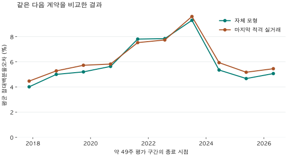
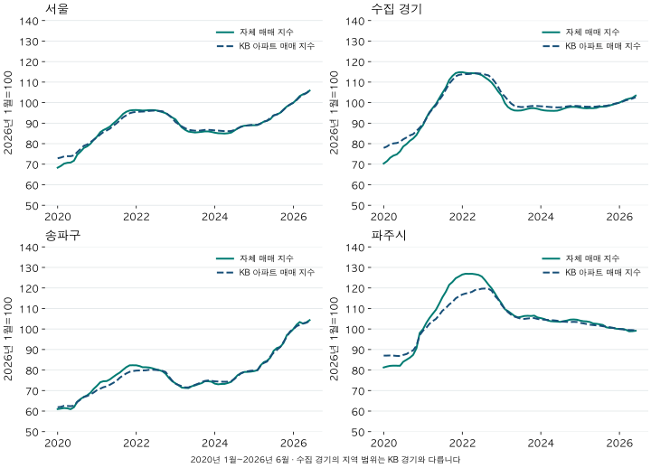

아파트 가격표 읽기 · 모형의 실용성 검증
아파트 시세 모형은 쓸 만할까? 실거래·동네·KB 지수로 재검증
평균 오차 5.68%인 시세 모형은 쓸 만할까요? 마지막 실거래와의 성능 비교, 시군구·법정동 오차, KB 지수의 월별 흐름을 검증하고 용도별 활용 기준을 제시합니다.
분석 기간 · 계약 평가 2016.12~2026.4 · KB 비교 2020.1~2026.6 | 자료 기준일 · 2026-10-04
아파트 시세 모형에 평균 5.68%의 오차가 있다면, 참고할 가치가 있을까요? 앞선 글에서 오차의 뜻과 한계를 설명했습니다. 이번에는 마지막 거래가격을 그대로 보는 것보다 나은지, 동네가 달라도 비슷한지, 지역의 가격 흐름이 KB 지수와 얼마나 닮았는지를 비교했습니다.
모형은 무엇을 잘해야 하나요?
이 모형의 목적은 단지·전용면적별 표준 조건의 가격 수준을 이어서 읽는 것입니다. 새 적격 거래가 들어오면 중심 가격을 갱신하고, 거래가 없으면 마지막 추정 수준을 유지하면서 근거가 오래됐음을 표시합니다. 거래 공백에도 비교할 기준이 이어진다는 점이 실용적입니다.
실제 계약에는 층·조망·수리·입주 조건·협상 차이가 섞입니다. 통상층을 선별하고 면적 단위를 맞춰도 이 차이가 모두 사라지지는 않습니다. 따라서 계약과 추정가격의 차이에는 모형의 지연·편향과 개별 집의 차이가 함께 들어갑니다. 이번 자료만으로 그 둘의 몫을 정확히 나눌 수는 없습니다.
거래 오차를 측정하는 일은 여전히 필요합니다. 다만 그것만으로 지역 흐름을 따라가는 성능까지 한 번에 판단할 수는 없습니다. 이번에는 단순 비교법 대비 오차, 시간·지역별 일관성, 외부 지수와의 흐름을 함께 확인했습니다. 결과를 본 뒤 유리한 기간이나 지역으로 범위를 줄이지 않았습니다.
마지막 실거래가를 그대로 보는 것보다 나은가요?
전체적으로는 모형이 조금 더 나았습니다. 비교 가능한 1,075,067건·15,044단지에서 평균 절대오차가 5.96%에서 5.68%로 낮아졌습니다. 반올림 전 차이는 0.28%포인트이며 상대 감소율은 4.76%입니다. ±10% 이내 비중도 마지막 거래 83.54%에서 모형 84.99%로 높아졌습니다.
두 방법 모두 평가 계약이 속한 주보다 앞선 자료만 사용했습니다. 단순 비교법은 같은 단지·같은 전용 평형에서 마지막으로 나온 적격 거래가격을 사용하며, 두 방법의 가격을 전용평당 단위로 맞췄습니다. 앞선 글의 전체 표본 중 이 단순 비교법도 계산할 수 있는 계약만 짝지었습니다.

| 계약 기간 | 평가 계약 | 모형 | 마지막 거래 | 상대 오차 감소 (%) |
|---|---|---|---|---|
| 전체 | 1,075,067 | 5.68 | 5.96 | 4.76 |
| 2016-12-09 ~ 2017-11-16 | 141,943 | 4.01 | 4.47 | 10.18 |
| 2017-11-17 ~ 2018-10-25 | 138,872 | 5.00 | 5.28 | 5.27 |
| 2018-10-26 ~ 2019-10-03 | 92,510 | 5.20 | 5.73 | 9.17 |
| 2019-10-04 ~ 2020-09-10 | 169,564 | 5.63 | 5.82 | 3.23 |
| 2020-09-11 ~ 2021-08-19 | 129,011 | 7.81 | 7.53 | -3.71 |
| 2021-08-20 ~ 2022-07-28 | 46,390 | 7.84 | 7.74 | -1.34 |
| 2022-07-29 ~ 2023-07-06 | 50,132 | 9.30 | 9.61 | 3.18 |
| 2023-07-07 ~ 2024-06-13 | 80,373 | 5.35 | 5.93 | 9.87 |
| 2024-06-14 ~ 2025-05-22 | 102,644 | 4.67 | 5.17 | 9.70 |
| 2025-05-23 ~ 2026-04-30 | 123,628 | 5.07 | 5.45 | 7.09 |
모형은 10개 평가 구간 중 8개에서 마지막 거래보다 오차가 낮았습니다. 2020-09-11~2021-08-19와 2021-08-20~2022-07-28에는 각각 상대 오차가 3.71%, 1.34% 더 컸습니다. 평균 개선은 모든 시기에서 우월하다는 뜻이 아닙니다. 새 가격 움직임을 완만하게 반영하는 성질이 빠른 변화기에 불리할 가능성도 있지만, 이 표만으로 원인을 확정하지는 않습니다.
오차 감소는 (1 − 모형의 평균 절대오차 ÷ 마지막 거래의 평균 절대오차) × 100입니다. %포인트 차이와 구분합니다. 과거 계약을 순서대로 다시 계산한 비교이며, 당시 신고 도착과 정정 전 자료까지 복원한 실시간 검증은 아닙니다.
5.68%의 오차가 매년 더해지나요?
그렇게 더하거나 복리로 곱하는 숫자가 아닙니다. 5.68%는 서로 다른 다음 계약에서 나온 절대오차의 가중평균입니다. 매년 가격에 5.68%씩 잘못 곱하도록 설계된 성장률이 아닙니다.
새 거래를 반영하는 기본 계산은 ‘기존 로그가격 + 반영 비중 × (새 로그거래가격 − 기존 로그가격)’입니다. 앞선 추정이 높았고 새 거래가 낮으면 아래로, 반대면 위로 수정됩니다. 한 건의 특이 거래에 끌려가지 않도록 반영 정도를 조절하고, 여러 거래가 새 수준에서 이어지는지도 봅니다. 그래서 개별 계약을 정확히 통과하지 않는 것이 곧 설계 실패는 아닙니다.
거래가 끊겼을 때는 다릅니다. 중심값을 그대로 두므로 실제 시장이 움직이면 뒤처질 수 있습니다. 이때 시간이 지나며 커지도록 설계된 것은 불확실성이고, 근거의 신뢰도는 낮아집니다. 앞선 검증에서 마지막 근거가 0~3주 지난 표본의 평균 절대오차는 4.13%, 26주 이상은 13.49%였습니다. 이는 서로 다른 집의 비교이며 같은 집을 26주 기다린 효과를 측정한 값은 아닙니다.
| 기간 | 평균 절대오차 (%) | 평균 부호오차 (%) |
|---|---|---|
| 2016-12-09 ~ 2017-11-16 | 4.02 | -1.07 |
| 2017-11-17 ~ 2018-10-25 | 5.01 | -2.00 |
| 2018-10-26 ~ 2019-10-03 | 5.21 | -0.81 |
| 2019-10-04 ~ 2020-09-10 | 5.64 | -2.95 |
| 2020-09-11 ~ 2021-08-19 | 7.81 | -5.29 |
| 2021-08-20 ~ 2022-07-28 | 7.85 | -3.73 |
| 2022-07-29 ~ 2023-07-06 | 9.30 | 4.68 |
| 2023-07-07 ~ 2024-06-13 | 5.35 | 0.08 |
| 2024-06-14 ~ 2025-05-22 | 4.67 | -0.85 |
| 2025-05-23 ~ 2026-04-30 | 5.07 | -1.59 |
전체 평가 표본의 오차는 첫 구간 4.02%, 2022년 7월~2023년 7월 구간 9.30%, 마지막 구간 5.07%였습니다. 달력이 뒤로 갈수록 계속 커지는 모습은 아닙니다. 다만 대상 계약이 달라지는 열 구간의 기술통계이므로 누적 편향이 전혀 없다는 증명은 아닙니다. 부호오차는 추정이 실제보다 높으면 양수, 낮으면 음수로 계산해 방향도 함께 보였습니다.
지수는 월 변화율을 연결하므로 작은 방향성 편향이 오래 이어지면 수준 차이가 누적될 수 있습니다. 따라서 주택 가격의 다음 계약 오차와 지역 지수의 장기 차이를 구분해야 합니다. 아래 KB 비교에서는 수준 차이와 월 변화 차이를 모두 확인합니다. 새 거래 없이 몇 달 뒤 가격을 내다보는 다단계 예측은 이번에 검증하지 않았습니다.
송파구는 정확하고 파주시는 부정확한가요?
이번 결과는 그 예상과 달랐습니다. 전체 평가 기간의 평균 절대오차는 송파구 6.19%, 파주시 5.43%였습니다. ±10% 이내 비중은 각각 82.78%, 85.34%였습니다. 두 지역 모두 대부분의 평가 계약이 10% 이내였지만, 송파구에 오차가 거의 없다고 말할 수는 없습니다.
| 지역 | 평가 계약 수 범위 | 단지 수 범위 | 평균 절대오차 (%) | 평균 부호오차 (%) | ±10% 이내 (%) |
|---|---|---|---|---|---|
| 송파구 | 10,000~29,999 | 300~999 | 6.19 | -3.33 | 82.78 |
| 파주시 | 10,000~29,999 | 100~299 | 5.43 | -0.26 | 85.34 |
지역별로 오차가 다른 것은 확인할 수 있지만, 지명 자체가 원인이라는 뜻은 아닙니다. 거래가 생긴 시기, 가격대, 단지 구성, 근거가 오래된 정도가 다릅니다. 같은 구·시에서도 여러 법정동이 섞이며, 구의 오차율은 동별 오차의 단순 평균이 아닙니다.
평가가 있는 61개 시군구 중 60개, 769개 법정동 묶음 중 139개가 공개 기준을 충족했습니다. 이들 시군구의 평균 절대오차는 4.25~8.67%, 법정동은 4.12~12.62%였습니다. 같은 송파구에서도 기준을 충족한 5개 동은 문정동 5.64%, 가락동 6.28%, 송파동 6.68%, 오금동 6.95%, 방이동 7.38%로 달랐습니다. 파주시에서 기준을 충족한 금촌동은 5.49%였습니다. 이는 공개 가능한 동들만의 비교이며, 빠진 동까지 대표하지는 않습니다.
수집한 전체 시군구의 오차 펼치기
| 지역 | 평가 계약 수 범위 | 단지 수 범위 | 평균 절대오차 (%) | 평균 부호오차 (%) | ±10% 이내 (%) |
|---|---|---|---|---|---|
| 종로구 | 1,000~4,999 | 100~299 | 7.31 | -3.42 | 78.38 |
| 중구 | 5,000~9,999 | 100~299 | 6.69 | -2.99 | 80.03 |
| 용산구 | 5,000~9,999 | 100~299 | 8.67 | -5.58 | 71.71 |
| 성동구 | 10,000~29,999 | 100~299 | 5.87 | -3.09 | 84.06 |
| 광진구 | 5,000~9,999 | 100~299 | 7.37 | -4.11 | 76.65 |
| 동대문구 | 10,000~29,999 | 300~999 | 5.65 | -2.52 | 85.37 |
| 중랑구 | 10,000~29,999 | 100~299 | 5.74 | -2.59 | 84.37 |
| 성북구 | 10,000~29,999 | 100~299 | 4.92 | -1.74 | 88.71 |
| 강북구 | 5,000~9,999 | 100~299 | 5.42 | -1.88 | 86.49 |
| 도봉구 | 10,000~29,999 | 100~299 | 5.99 | -1.87 | 83.49 |
| 노원구 | 30,000~99,999 | 300~999 | 5.27 | -1.64 | 87.27 |
| 은평구 | 10,000~29,999 | 300~999 | 6.76 | -3.28 | 80.04 |
| 서대문구 | 10,000~29,999 | 100~299 | 6.20 | -2.86 | 83.65 |
| 마포구 | 10,000~29,999 | 300~999 | 6.14 | -3.34 | 82.89 |
| 양천구 | 10,000~29,999 | 300~999 | 6.99 | -4.12 | 78.98 |
| 강서구 | 10,000~29,999 | 300~999 | 6.18 | -3.03 | 82.74 |
| 구로구 | 10,000~29,999 | 300~999 | 6.09 | -2.54 | 83.02 |
| 금천구 | 5,000~9,999 | 100~299 | 6.13 | -2.18 | 82.79 |
| 영등포구 | 10,000~29,999 | 100~299 | 5.75 | -2.91 | 84.19 |
| 동작구 | 10,000~29,999 | 100~299 | 5.80 | -2.98 | 85.01 |
| 관악구 | 10,000~29,999 | 100~299 | 6.41 | -2.74 | 81.72 |
| 서초구 | 10,000~29,999 | 300~999 | 8.22 | -5.31 | 74.17 |
| 강남구 | 10,000~29,999 | 300~999 | 7.57 | -4.65 | 76.46 |
| 송파구 | 10,000~29,999 | 300~999 | 6.19 | -3.33 | 82.78 |
| 강동구 | 10,000~29,999 | 300~999 | 6.91 | -3.68 | 79.71 |
| 수원시 장안구 | 10,000~29,999 | 100~299 | 5.95 | -0.93 | 85.02 |
| 수원시 권선구 | 10,000~29,999 | 100~299 | 4.99 | -0.94 | 87.57 |
| 수원시 팔달구 | 10,000~29,999 | 100~299 | 5.93 | -1.35 | 83.58 |
| 수원시 영통구 | 10,000~29,999 | 100~299 | 4.56 | -0.77 | 90.52 |
| 성남시 수정구 | 5,000~9,999 | 100~299 | 5.46 | -2.14 | 86.51 |
| 성남시 중원구 | 5,000~9,999 | 100~299 | 5.22 | -2.01 | 87.22 |
| 성남시 분당구 | 30,000~99,999 | 100~299 | 5.75 | -2.55 | 84.13 |
| 의정부시 | 30,000~99,999 | 100~299 | 5.39 | -0.48 | 86.00 |
| 안양시 만안구 | 10,000~29,999 | 100~299 | 5.25 | -1.36 | 86.58 |
| 안양시 동안구 | 10,000~29,999 | 100~299 | 5.27 | -1.63 | 87.58 |
| 부천시 원미구 | 10,000~29,999 | 300~999 | 5.41 | -1.17 | 86.49 |
| 부천시 소사구 | 10,000~29,999 | 100~299 | 5.59 | -1.32 | 84.83 |
| 부천시 오정구 | 5,000~9,999 | 100~299 | 7.88 | -1.97 | 72.07 |
| 광명시 | 10,000~29,999 | 100~299 | 4.58 | -1.17 | 90.23 |
| 평택시 | 30,000~99,999 | 300~999 | 6.29 | 0.07 | 81.79 |
| 안산시 상록구 | 10,000~29,999 | 50~99 | 6.33 | -0.74 | 81.10 |
| 안산시 단원구 | 10,000~29,999 | 50~99 | 5.30 | -0.57 | 86.16 |
| 고양시 덕양구 | 10,000~29,999 | 100~299 | 5.30 | -1.03 | 86.50 |
| 고양시 일산동구 | 10,000~29,999 | 100~299 | 5.35 | -0.64 | 86.28 |
| 고양시 일산서구 | 10,000~29,999 | 100~299 | 5.74 | -0.70 | 84.63 |
| 과천시 | 표본 부족 | 표본 부족 | 표본 부족 | 표본 부족 | 표본 부족 |
| 구리시 | 10,000~29,999 | 100~299 | 5.62 | -2.26 | 86.54 |
| 남양주시 | 30,000~99,999 | 300~999 | 5.85 | -0.98 | 83.53 |
| 군포시 | 10,000~29,999 | 100~299 | 5.19 | -1.11 | 87.13 |
| 의왕시 | 10,000~29,999 | 100~299 | 5.31 | -1.28 | 87.01 |
| 하남시 | 10,000~29,999 | 100~299 | 4.25 | -0.99 | 92.38 |
| 용인시 처인구 | 10,000~29,999 | 100~299 | 5.74 | -0.82 | 83.98 |
| 용인시 기흥구 | 30,000~99,999 | 100~299 | 5.00 | -1.04 | 88.09 |
| 용인시 수지구 | 30,000~99,999 | 100~299 | 4.52 | -1.29 | 90.73 |
| 파주시 | 10,000~29,999 | 100~299 | 5.43 | -0.26 | 85.34 |
| 김포시 | 10,000~29,999 | 100~299 | 4.85 | -0.58 | 88.65 |
| 화성시 만세구 | 5,000~9,999 | 50~99 | 5.30 | -0.77 | 85.83 |
| 화성시 효행구 | 5,000~9,999 | 50~99 | 4.90 | -0.58 | 88.12 |
| 화성시 병점구 | 10,000~29,999 | 50~99 | 5.06 | -0.77 | 87.88 |
| 화성시 동탄구 | 10,000~29,999 | 100~299 | 4.64 | -0.73 | 90.51 |
| 광주시 | 10,000~29,999 | 100~299 | 5.34 | -0.74 | 85.99 |
전체 법정동의 오차와 표본 부족 확인하기
평가 계약 200건·30단지 이상일 때만 오차를 공개했습니다. 그보다 작은 곳은 정확하다는 뜻도, 부정확하다는 뜻도 아닙니다. 거래가 전혀 없거나 사전 추정이 없는 집은 이 평가 분모에 없습니다.
| 지역 | 평가 계약 수 범위 | 단지 수 범위 | 평균 절대오차 (%) | 평균 부호오차 (%) | ±10% 이내 (%) |
|---|---|---|---|---|---|
| 종로구 청운동 | 표본 부족 | 표본 부족 | 표본 부족 | 표본 부족 | 표본 부족 |
| 종로구 신교동 | 표본 부족 | 표본 부족 | 표본 부족 | 표본 부족 | 표본 부족 |
| 종로구 통인동 | 표본 부족 | 표본 부족 | 표본 부족 | 표본 부족 | 표본 부족 |
| 종로구 누상동 | 표본 부족 | 표본 부족 | 표본 부족 | 표본 부족 | 표본 부족 |
| 종로구 옥인동 | 표본 부족 | 표본 부족 | 표본 부족 | 표본 부족 | 표본 부족 |
| 종로구 필운동 | 표본 부족 | 표본 부족 | 표본 부족 | 표본 부족 | 표본 부족 |
| 종로구 사직동 | 표본 부족 | 표본 부족 | 표본 부족 | 표본 부족 | 표본 부족 |
| 종로구 당주동 | 표본 부족 | 표본 부족 | 표본 부족 | 표본 부족 | 표본 부족 |
| 종로구 내수동 | 표본 부족 | 표본 부족 | 표본 부족 | 표본 부족 | 표본 부족 |
| 종로구 신문로1가 | 표본 부족 | 표본 부족 | 표본 부족 | 표본 부족 | 표본 부족 |
| 종로구 신문로2가 | 표본 부족 | 표본 부족 | 표본 부족 | 표본 부족 | 표본 부족 |
| 종로구 수송동 | 표본 부족 | 표본 부족 | 표본 부족 | 표본 부족 | 표본 부족 |
| 종로구 견지동 | 표본 부족 | 표본 부족 | 표본 부족 | 표본 부족 | 표본 부족 |
| 종로구 익선동 | 표본 부족 | 표본 부족 | 표본 부족 | 표본 부족 | 표본 부족 |
| 종로구 인의동 | 표본 부족 | 표본 부족 | 표본 부족 | 표본 부족 | 표본 부족 |
| 종로구 연지동 | 표본 부족 | 표본 부족 | 표본 부족 | 표본 부족 | 표본 부족 |
| 종로구 효제동 | 표본 부족 | 표본 부족 | 표본 부족 | 표본 부족 | 표본 부족 |
| 종로구 이화동 | 표본 부족 | 표본 부족 | 표본 부족 | 표본 부족 | 표본 부족 |
| 종로구 연건동 | 표본 부족 | 표본 부족 | 표본 부족 | 표본 부족 | 표본 부족 |
| 종로구 충신동 | 표본 부족 | 표본 부족 | 표본 부족 | 표본 부족 | 표본 부족 |
| 종로구 동숭동 | 표본 부족 | 표본 부족 | 표본 부족 | 표본 부족 | 표본 부족 |
| 종로구 혜화동 | 표본 부족 | 표본 부족 | 표본 부족 | 표본 부족 | 표본 부족 |
| 종로구 명륜1가 | 표본 부족 | 표본 부족 | 표본 부족 | 표본 부족 | 표본 부족 |
| 종로구 명륜2가 | 표본 부족 | 표본 부족 | 표본 부족 | 표본 부족 | 표본 부족 |
| 종로구 명륜3가 | 표본 부족 | 표본 부족 | 표본 부족 | 표본 부족 | 표본 부족 |
| 종로구 창신동 | 표본 부족 | 표본 부족 | 표본 부족 | 표본 부족 | 표본 부족 |
| 종로구 숭인동 | 표본 부족 | 표본 부족 | 표본 부족 | 표본 부족 | 표본 부족 |
| 종로구 평동 | 표본 부족 | 표본 부족 | 표본 부족 | 표본 부족 | 표본 부족 |
| 종로구 홍파동 | 표본 부족 | 표본 부족 | 표본 부족 | 표본 부족 | 표본 부족 |
| 종로구 교북동 | 표본 부족 | 표본 부족 | 표본 부족 | 표본 부족 | 표본 부족 |
| 종로구 행촌동 | 표본 부족 | 표본 부족 | 표본 부족 | 표본 부족 | 표본 부족 |
| 종로구 구기동 | 표본 부족 | 표본 부족 | 표본 부족 | 표본 부족 | 표본 부족 |
| 종로구 평창동 | 표본 부족 | 표본 부족 | 표본 부족 | 표본 부족 | 표본 부족 |
| 종로구 부암동 | 표본 부족 | 표본 부족 | 표본 부족 | 표본 부족 | 표본 부족 |
| 종로구 신영동 | 표본 부족 | 표본 부족 | 표본 부족 | 표본 부족 | 표본 부족 |
| 종로구 무악동 | 표본 부족 | 표본 부족 | 표본 부족 | 표본 부족 | 표본 부족 |
| 중구 남창동 | 표본 부족 | 표본 부족 | 표본 부족 | 표본 부족 | 표본 부족 |
| 중구 남대문로5가 | 표본 부족 | 표본 부족 | 표본 부족 | 표본 부족 | 표본 부족 |
| 중구 회현동1가 | 표본 부족 | 표본 부족 | 표본 부족 | 표본 부족 | 표본 부족 |
| 중구 회현동2가 | 표본 부족 | 표본 부족 | 표본 부족 | 표본 부족 | 표본 부족 |
| 중구 남산동2가 | 표본 부족 | 표본 부족 | 표본 부족 | 표본 부족 | 표본 부족 |
| 중구 충무로4가 | 표본 부족 | 표본 부족 | 표본 부족 | 표본 부족 | 표본 부족 |
| 중구 충무로5가 | 표본 부족 | 표본 부족 | 표본 부족 | 표본 부족 | 표본 부족 |
| 중구 인현동2가 | 표본 부족 | 표본 부족 | 표본 부족 | 표본 부족 | 표본 부족 |
| 중구 묵정동 | 표본 부족 | 표본 부족 | 표본 부족 | 표본 부족 | 표본 부족 |
| 중구 필동1가 | 표본 부족 | 표본 부족 | 표본 부족 | 표본 부족 | 표본 부족 |
| 중구 필동3가 | 표본 부족 | 표본 부족 | 표본 부족 | 표본 부족 | 표본 부족 |
| 중구 예장동 | 표본 부족 | 표본 부족 | 표본 부족 | 표본 부족 | 표본 부족 |
| 중구 장충동1가 | 표본 부족 | 표본 부족 | 표본 부족 | 표본 부족 | 표본 부족 |
| 중구 장충동2가 | 표본 부족 | 표본 부족 | 표본 부족 | 표본 부족 | 표본 부족 |
| 중구 을지로5가 | 표본 부족 | 표본 부족 | 표본 부족 | 표본 부족 | 표본 부족 |
| 중구 오장동 | 표본 부족 | 표본 부족 | 표본 부족 | 표본 부족 | 표본 부족 |
| 중구 입정동 | 표본 부족 | 표본 부족 | 표본 부족 | 표본 부족 | 표본 부족 |
| 중구 산림동 | 표본 부족 | 표본 부족 | 표본 부족 | 표본 부족 | 표본 부족 |
| 중구 신당동 | 1,000~4,999 | 50~99 | 6.60 | -3.14 | 81.09 |
| 중구 흥인동 | 표본 부족 | 표본 부족 | 표본 부족 | 표본 부족 | 표본 부족 |
| 중구 황학동 | 표본 부족 | 표본 부족 | 표본 부족 | 표본 부족 | 표본 부족 |
| 중구 정동 | 표본 부족 | 표본 부족 | 표본 부족 | 표본 부족 | 표본 부족 |
| 중구 순화동 | 표본 부족 | 표본 부족 | 표본 부족 | 표본 부족 | 표본 부족 |
| 중구 중림동 | 표본 부족 | 표본 부족 | 표본 부족 | 표본 부족 | 표본 부족 |
| 중구 만리동1가 | 표본 부족 | 표본 부족 | 표본 부족 | 표본 부족 | 표본 부족 |
| 중구 만리동2가 | 표본 부족 | 표본 부족 | 표본 부족 | 표본 부족 | 표본 부족 |
| 용산구 후암동 | 표본 부족 | 표본 부족 | 표본 부족 | 표본 부족 | 표본 부족 |
| 용산구 공덕동 / 용산동2가 | 표본 부족 | 표본 부족 | 표본 부족 | 표본 부족 | 표본 부족 |
| 용산구 갈월동 | 표본 부족 | 표본 부족 | 표본 부족 | 표본 부족 | 표본 부족 |
| 용산구 동자동 | 표본 부족 | 표본 부족 | 표본 부족 | 표본 부족 | 표본 부족 |
| 용산구 청파동1가 | 표본 부족 | 표본 부족 | 표본 부족 | 표본 부족 | 표본 부족 |
| 용산구 청파동3가 | 표본 부족 | 표본 부족 | 표본 부족 | 표본 부족 | 표본 부족 |
| 용산구 원효로1가 | 표본 부족 | 표본 부족 | 표본 부족 | 표본 부족 | 표본 부족 |
| 용산구 원효로2가 | 표본 부족 | 표본 부족 | 표본 부족 | 표본 부족 | 표본 부족 |
| 용산구 신창동 | 표본 부족 | 표본 부족 | 표본 부족 | 표본 부족 | 표본 부족 |
| 용산구 산천동 | 표본 부족 | 표본 부족 | 표본 부족 | 표본 부족 | 표본 부족 |
| 용산구 청암동 | 표본 부족 | 표본 부족 | 표본 부족 | 표본 부족 | 표본 부족 |
| 용산구 원효로3가 | 표본 부족 | 표본 부족 | 표본 부족 | 표본 부족 | 표본 부족 |
| 용산구 원효로4가 | 표본 부족 | 표본 부족 | 표본 부족 | 표본 부족 | 표본 부족 |
| 용산구 효창동 | 표본 부족 | 표본 부족 | 표본 부족 | 표본 부족 | 표본 부족 |
| 용산구 도원동 | 표본 부족 | 표본 부족 | 표본 부족 | 표본 부족 | 표본 부족 |
| 용산구 용문동 | 표본 부족 | 표본 부족 | 표본 부족 | 표본 부족 | 표본 부족 |
| 용산구 문배동 | 표본 부족 | 표본 부족 | 표본 부족 | 표본 부족 | 표본 부족 |
| 용산구 신계동 | 표본 부족 | 표본 부족 | 표본 부족 | 표본 부족 | 표본 부족 |
| 용산구 한강로1가 | 표본 부족 | 표본 부족 | 표본 부족 | 표본 부족 | 표본 부족 |
| 용산구 한강로2가 | 표본 부족 | 표본 부족 | 표본 부족 | 표본 부족 | 표본 부족 |
| 용산구 용산동5가 | 표본 부족 | 표본 부족 | 표본 부족 | 표본 부족 | 표본 부족 |
| 용산구 한강로3가 | 표본 부족 | 표본 부족 | 표본 부족 | 표본 부족 | 표본 부족 |
| 용산구 이촌동 | 1,000~4,999 | 30~49 | 7.73 | -4.26 | 74.68 |
| 용산구 이태원동 | 표본 부족 | 표본 부족 | 표본 부족 | 표본 부족 | 표본 부족 |
| 용산구 한남동 | 200~999 | 30~49 | 11.48 | -8.02 | 63.60 |
| 용산구 동빙고동 | 표본 부족 | 표본 부족 | 표본 부족 | 표본 부족 | 표본 부족 |
| 용산구 서빙고동 | 표본 부족 | 표본 부족 | 표본 부족 | 표본 부족 | 표본 부족 |
| 용산구 주성동 | 표본 부족 | 표본 부족 | 표본 부족 | 표본 부족 | 표본 부족 |
| 용산구 보광동 | 표본 부족 | 표본 부족 | 표본 부족 | 표본 부족 | 표본 부족 |
| 성동구 상왕십리동 | 표본 부족 | 표본 부족 | 표본 부족 | 표본 부족 | 표본 부족 |
| 성동구 하왕십리동 | 표본 부족 | 표본 부족 | 표본 부족 | 표본 부족 | 표본 부족 |
| 성동구 홍익동 | 표본 부족 | 표본 부족 | 표본 부족 | 표본 부족 | 표본 부족 |
| 성동구 도선동 | 표본 부족 | 표본 부족 | 표본 부족 | 표본 부족 | 표본 부족 |
| 성동구 마장동 | 표본 부족 | 표본 부족 | 표본 부족 | 표본 부족 | 표본 부족 |
| 성동구 사근동 | 표본 부족 | 표본 부족 | 표본 부족 | 표본 부족 | 표본 부족 |
| 성동구 행당동 | 표본 부족 | 표본 부족 | 표본 부족 | 표본 부족 | 표본 부족 |
| 성동구 응봉동 | 표본 부족 | 표본 부족 | 표본 부족 | 표본 부족 | 표본 부족 |
| 성동구 금호동1가 | 표본 부족 | 표본 부족 | 표본 부족 | 표본 부족 | 표본 부족 |
| 성동구 금호동2가 | 표본 부족 | 표본 부족 | 표본 부족 | 표본 부족 | 표본 부족 |
| 성동구 금호동3가 | 표본 부족 | 표본 부족 | 표본 부족 | 표본 부족 | 표본 부족 |
| 성동구 금호동4가 | 표본 부족 | 표본 부족 | 표본 부족 | 표본 부족 | 표본 부족 |
| 성동구 옥수동 | 표본 부족 | 표본 부족 | 표본 부족 | 표본 부족 | 표본 부족 |
| 성동구 성수동1가 | 표본 부족 | 표본 부족 | 표본 부족 | 표본 부족 | 표본 부족 |
| 성동구 성수동2가 | 표본 부족 | 표본 부족 | 표본 부족 | 표본 부족 | 표본 부족 |
| 성동구 송정동 | 표본 부족 | 표본 부족 | 표본 부족 | 표본 부족 | 표본 부족 |
| 성동구 용답동 | 표본 부족 | 표본 부족 | 표본 부족 | 표본 부족 | 표본 부족 |
| 광진구 중곡동 | 200~999 | 30~49 | 9.63 | -5.71 | 66.80 |
| 광진구 능동 | 표본 부족 | 표본 부족 | 표본 부족 | 표본 부족 | 표본 부족 |
| 광진구 구의동 | 1,000~4,999 | 50~99 | 7.13 | -4.35 | 79.46 |
| 광진구 광장동 | 1,000~4,999 | 30~49 | 6.42 | -3.26 | 81.06 |
| 광진구 자양동 | 1,000~4,999 | 50~99 | 8.04 | -4.60 | 72.51 |
| 광진구 화양동 | 표본 부족 | 표본 부족 | 표본 부족 | 표본 부족 | 표본 부족 |
| 광진구 군자동 | 표본 부족 | 표본 부족 | 표본 부족 | 표본 부족 | 표본 부족 |
| 동대문구 신설동 | 표본 부족 | 표본 부족 | 표본 부족 | 표본 부족 | 표본 부족 |
| 동대문구 용두동 | 표본 부족 | 표본 부족 | 표본 부족 | 표본 부족 | 표본 부족 |
| 동대문구 제기동 | 표본 부족 | 표본 부족 | 표본 부족 | 표본 부족 | 표본 부족 |
| 동대문구 전농동 | 표본 부족 | 표본 부족 | 표본 부족 | 표본 부족 | 표본 부족 |
| 동대문구 답십리동 | 1,000~4,999 | 30~49 | 4.94 | -1.75 | 88.77 |
| 동대문구 장안동 | 1,000~4,999 | 100~299 | 7.01 | -3.94 | 78.99 |
| 동대문구 청량리동 | 표본 부족 | 표본 부족 | 표본 부족 | 표본 부족 | 표본 부족 |
| 동대문구 회기동 | 표본 부족 | 표본 부족 | 표본 부족 | 표본 부족 | 표본 부족 |
| 동대문구 휘경동 | 표본 부족 | 표본 부족 | 표본 부족 | 표본 부족 | 표본 부족 |
| 동대문구 이문동 | 표본 부족 | 표본 부족 | 표본 부족 | 표본 부족 | 표본 부족 |
| 중랑구 면목동 | 1,000~4,999 | 50~99 | 6.20 | -2.98 | 81.58 |
| 중랑구 상봉동 | 1,000~4,999 | 30~49 | 5.58 | -2.10 | 86.13 |
| 중랑구 중화동 | 표본 부족 | 표본 부족 | 표본 부족 | 표본 부족 | 표본 부족 |
| 중랑구 묵동 | 1,000~4,999 | 30~49 | 6.08 | -2.89 | 83.06 |
| 중랑구 망우동 | 200~999 | 30~49 | 6.36 | -3.37 | 80.78 |
| 중랑구 신내동 | 1,000~4,999 | 30~49 | 4.91 | -1.85 | 88.01 |
| 성북구 성북동 | 표본 부족 | 표본 부족 | 표본 부족 | 표본 부족 | 표본 부족 |
| 성북구 성북동1가 | 표본 부족 | 표본 부족 | 표본 부족 | 표본 부족 | 표본 부족 |
| 성북구 돈암동 | 표본 부족 | 표본 부족 | 표본 부족 | 표본 부족 | 표본 부족 |
| 성북구 동소문동4가 | 표본 부족 | 표본 부족 | 표본 부족 | 표본 부족 | 표본 부족 |
| 성북구 동소문동5가 | 표본 부족 | 표본 부족 | 표본 부족 | 표본 부족 | 표본 부족 |
| 성북구 동소문동6가 | 표본 부족 | 표본 부족 | 표본 부족 | 표본 부족 | 표본 부족 |
| 성북구 동소문동7가 | 표본 부족 | 표본 부족 | 표본 부족 | 표본 부족 | 표본 부족 |
| 성북구 삼선동2가 | 표본 부족 | 표본 부족 | 표본 부족 | 표본 부족 | 표본 부족 |
| 성북구 삼선동3가 | 표본 부족 | 표본 부족 | 표본 부족 | 표본 부족 | 표본 부족 |
| 성북구 삼선동4가 | 표본 부족 | 표본 부족 | 표본 부족 | 표본 부족 | 표본 부족 |
| 성북구 삼선동5가 | 표본 부족 | 표본 부족 | 표본 부족 | 표본 부족 | 표본 부족 |
| 성북구 동선동1가 | 표본 부족 | 표본 부족 | 표본 부족 | 표본 부족 | 표본 부족 |
| 성북구 동선동3가 | 표본 부족 | 표본 부족 | 표본 부족 | 표본 부족 | 표본 부족 |
| 성북구 동선동4가 | 표본 부족 | 표본 부족 | 표본 부족 | 표본 부족 | 표본 부족 |
| 성북구 동선동5가 | 표본 부족 | 표본 부족 | 표본 부족 | 표본 부족 | 표본 부족 |
| 성북구 안암동1가 | 표본 부족 | 표본 부족 | 표본 부족 | 표본 부족 | 표본 부족 |
| 성북구 안암동3가 | 표본 부족 | 표본 부족 | 표본 부족 | 표본 부족 | 표본 부족 |
| 성북구 안암동4가 | 표본 부족 | 표본 부족 | 표본 부족 | 표본 부족 | 표본 부족 |
| 성북구 보문동4가 | 표본 부족 | 표본 부족 | 표본 부족 | 표본 부족 | 표본 부족 |
| 성북구 보문동6가 | 표본 부족 | 표본 부족 | 표본 부족 | 표본 부족 | 표본 부족 |
| 성북구 보문동1가 | 표본 부족 | 표본 부족 | 표본 부족 | 표본 부족 | 표본 부족 |
| 성북구 보문동2가 | 표본 부족 | 표본 부족 | 표본 부족 | 표본 부족 | 표본 부족 |
| 성북구 보문동3가 | 표본 부족 | 표본 부족 | 표본 부족 | 표본 부족 | 표본 부족 |
| 성북구 정릉동 | 1,000~4,999 | 30~49 | 5.27 | -1.90 | 86.58 |
| 성북구 길음동 | 표본 부족 | 표본 부족 | 표본 부족 | 표본 부족 | 표본 부족 |
| 성북구 종암동 | 표본 부족 | 표본 부족 | 표본 부족 | 표본 부족 | 표본 부족 |
| 성북구 하월곡동 | 표본 부족 | 표본 부족 | 표본 부족 | 표본 부족 | 표본 부족 |
| 성북구 상월곡동 | 표본 부족 | 표본 부족 | 표본 부족 | 표본 부족 | 표본 부족 |
| 성북구 장위동 | 표본 부족 | 표본 부족 | 표본 부족 | 표본 부족 | 표본 부족 |
| 성북구 석관동 | 표본 부족 | 표본 부족 | 표본 부족 | 표본 부족 | 표본 부족 |
| 강북구 미아동 | 1,000~4,999 | 30~49 | 4.56 | -1.38 | 91.25 |
| 강북구 번동 | 표본 부족 | 표본 부족 | 표본 부족 | 표본 부족 | 표본 부족 |
| 강북구 수유동 | 1,000~4,999 | 50~99 | 7.26 | -3.06 | 76.75 |
| 강북구 우이동 | 표본 부족 | 표본 부족 | 표본 부족 | 표본 부족 | 표본 부족 |
| 강북구 도봉동 | 표본 부족 | 표본 부족 | 표본 부족 | 표본 부족 | 표본 부족 |
| 도봉구 쌍문동 | 1,000~4,999 | 50~99 | 6.51 | -2.29 | 80.97 |
| 도봉구 방학동 | 1,000~4,999 | 30~49 | 6.47 | -1.56 | 81.01 |
| 도봉구 창동 | 5,000~9,999 | 50~99 | 5.74 | -1.97 | 84.57 |
| 도봉구 도봉동 | 표본 부족 | 표본 부족 | 표본 부족 | 표본 부족 | 표본 부족 |
| 노원구 월계동 | 5,000~9,999 | 30~49 | 5.06 | -1.71 | 88.06 |
| 노원구 공릉동 | 1,000~4,999 | 50~99 | 5.61 | -2.36 | 85.87 |
| 노원구 하계동 | 표본 부족 | 표본 부족 | 표본 부족 | 표본 부족 | 표본 부족 |
| 노원구 상계동 | 10,000~29,999 | 100~299 | 5.55 | -1.44 | 85.88 |
| 노원구 중계동 | 5,000~9,999 | 50~99 | 4.93 | -1.46 | 89.15 |
| 은평구 수색동 | 표본 부족 | 표본 부족 | 표본 부족 | 표본 부족 | 표본 부족 |
| 은평구 녹번동 | 표본 부족 | 표본 부족 | 표본 부족 | 표본 부족 | 표본 부족 |
| 은평구 불광동 | 1,000~4,999 | 30~49 | 5.95 | -2.76 | 84.32 |
| 은평구 갈현동 | 200~999 | 30~49 | 9.89 | -5.63 | 66.92 |
| 은평구 구산동 | 200~999 | 30~49 | 7.49 | -4.39 | 77.52 |
| 은평구 대조동 | 200~999 | 50~99 | 7.64 | -2.73 | 74.43 |
| 은평구 응암동 | 1,000~4,999 | 50~99 | 5.54 | -2.46 | 86.00 |
| 은평구 역촌동 | 200~999 | 50~99 | 10.05 | -7.38 | 64.02 |
| 은평구 신사동 | 1,000~4,999 | 50~99 | 7.16 | -3.58 | 77.77 |
| 은평구 증산동 | 200~999 | 30~49 | 8.65 | -6.04 | 73.94 |
| 은평구 진관동 | 1,000~4,999 | 30~49 | 6.66 | -2.61 | 79.30 |
| 서대문구 충정로2가 | 표본 부족 | 표본 부족 | 표본 부족 | 표본 부족 | 표본 부족 |
| 서대문구 충정로3가 | 표본 부족 | 표본 부족 | 표본 부족 | 표본 부족 | 표본 부족 |
| 서대문구 합동 | 표본 부족 | 표본 부족 | 표본 부족 | 표본 부족 | 표본 부족 |
| 서대문구 길동 / 냉천동 | 표본 부족 | 표본 부족 | 표본 부족 | 표본 부족 | 표본 부족 |
| 서대문구 천연동 | 표본 부족 | 표본 부족 | 표본 부족 | 표본 부족 | 표본 부족 |
| 서대문구 영천동 | 표본 부족 | 표본 부족 | 표본 부족 | 표본 부족 | 표본 부족 |
| 서대문구 현저동 | 표본 부족 | 표본 부족 | 표본 부족 | 표본 부족 | 표본 부족 |
| 서대문구 북아현동 | 1,000~4,999 | 30~49 | 6.49 | -3.80 | 84.11 |
| 서대문구 홍제동 | 1,000~4,999 | 50~99 | 6.72 | -3.20 | 80.98 |
| 서대문구 대현동 | 표본 부족 | 표본 부족 | 표본 부족 | 표본 부족 | 표본 부족 |
| 서대문구 창천동 | 표본 부족 | 표본 부족 | 표본 부족 | 표본 부족 | 표본 부족 |
| 서대문구 연희동 | 200~999 | 30~49 | 8.32 | -4.02 | 76.16 |
| 서대문구 홍은동 | 1,000~4,999 | 50~99 | 6.44 | -2.89 | 81.67 |
| 서대문구 북가좌동 | 표본 부족 | 표본 부족 | 표본 부족 | 표본 부족 | 표본 부족 |
| 서대문구 남가좌동 | 표본 부족 | 표본 부족 | 표본 부족 | 표본 부족 | 표본 부족 |
| 마포구 아현동 | 표본 부족 | 표본 부족 | 표본 부족 | 표본 부족 | 표본 부족 |
| 마포구 공덕동 | 표본 부족 | 표본 부족 | 표본 부족 | 표본 부족 | 표본 부족 |
| 마포구 신공덕동 | 표본 부족 | 표본 부족 | 표본 부족 | 표본 부족 | 표본 부족 |
| 마포구 도화동 | 표본 부족 | 표본 부족 | 표본 부족 | 표본 부족 | 표본 부족 |
| 마포구 용강동 | 표본 부족 | 표본 부족 | 표본 부족 | 표본 부족 | 표본 부족 |
| 마포구 토정동 | 표본 부족 | 표본 부족 | 표본 부족 | 표본 부족 | 표본 부족 |
| 마포구 마포동 | 표본 부족 | 표본 부족 | 표본 부족 | 표본 부족 | 표본 부족 |
| 마포구 대흥동 | 표본 부족 | 표본 부족 | 표본 부족 | 표본 부족 | 표본 부족 |
| 마포구 염리동 | 표본 부족 | 표본 부족 | 표본 부족 | 표본 부족 | 표본 부족 |
| 마포구 노고산동 | 표본 부족 | 표본 부족 | 표본 부족 | 표본 부족 | 표본 부족 |
| 마포구 신수동 | 표본 부족 | 표본 부족 | 표본 부족 | 표본 부족 | 표본 부족 |
| 마포구 현석동 | 표본 부족 | 표본 부족 | 표본 부족 | 표본 부족 | 표본 부족 |
| 마포구 구수동 | 표본 부족 | 표본 부족 | 표본 부족 | 표본 부족 | 표본 부족 |
| 마포구 창전동 | 표본 부족 | 표본 부족 | 표본 부족 | 표본 부족 | 표본 부족 |
| 마포구 상수동 | 표본 부족 | 표본 부족 | 표본 부족 | 표본 부족 | 표본 부족 |
| 마포구 하중동 | 표본 부족 | 표본 부족 | 표본 부족 | 표본 부족 | 표본 부족 |
| 마포구 신정동 | 표본 부족 | 표본 부족 | 표본 부족 | 표본 부족 | 표본 부족 |
| 마포구 서교동 | 표본 부족 | 표본 부족 | 표본 부족 | 표본 부족 | 표본 부족 |
| 마포구 동교동 | 표본 부족 | 표본 부족 | 표본 부족 | 표본 부족 | 표본 부족 |
| 마포구 합정동 | 표본 부족 | 표본 부족 | 표본 부족 | 표본 부족 | 표본 부족 |
| 마포구 망원동 | 200~999 | 50~99 | 10.81 | -8.10 | 62.38 |
| 마포구 연남동 | 표본 부족 | 표본 부족 | 표본 부족 | 표본 부족 | 표본 부족 |
| 마포구 성산동 | 1,000~4,999 | 30~49 | 6.25 | -3.42 | 83.32 |
| 마포구 중동 | 표본 부족 | 표본 부족 | 표본 부족 | 표본 부족 | 표본 부족 |
| 마포구 상암동 | 표본 부족 | 표본 부족 | 표본 부족 | 표본 부족 | 표본 부족 |
| 양천구 신정동 | 5,000~9,999 | 100~299 | 6.31 | -3.35 | 82.43 |
| 양천구 목동 | 5,000~9,999 | 100~299 | 7.17 | -4.62 | 78.43 |
| 양천구 신월동 | 1,000~4,999 | 100~299 | 7.84 | -4.73 | 74.30 |
| 강서구 염창동 | 1,000~4,999 | 50~99 | 5.86 | -3.24 | 84.02 |
| 강서구 등촌동 | 1,000~4,999 | 50~99 | 5.52 | -2.65 | 86.08 |
| 강서구 화곡동 | 1,000~4,999 | 100~299 | 7.39 | -3.70 | 76.72 |
| 강서구 가양동 | 표본 부족 | 표본 부족 | 표본 부족 | 표본 부족 | 표본 부족 |
| 강서구 마곡동 | 1,000~4,999 | 30~49 | 5.70 | -2.91 | 83.78 |
| 강서구 내발산동 | 1,000~4,999 | 50~99 | 6.92 | -4.24 | 80.01 |
| 강서구 공항동 | 표본 부족 | 표본 부족 | 표본 부족 | 표본 부족 | 표본 부족 |
| 강서구 방화동 | 1,000~4,999 | 50~99 | 6.37 | -2.48 | 82.20 |
| 구로구 신도림동 | 표본 부족 | 표본 부족 | 표본 부족 | 표본 부족 | 표본 부족 |
| 구로구 구로동 | 5,000~9,999 | 300~999 | 7.02 | -3.06 | 79.13 |
| 구로구 가리봉동 | 표본 부족 | 표본 부족 | 표본 부족 | 표본 부족 | 표본 부족 |
| 구로구 고척동 | 1,000~4,999 | 30~49 | 5.53 | -2.44 | 85.52 |
| 구로구 개봉동 | 1,000~4,999 | 30~49 | 5.14 | -1.83 | 87.20 |
| 구로구 오류동 | 1,000~4,999 | 30~49 | 6.19 | -2.09 | 81.72 |
| 구로구 궁동 | 표본 부족 | 표본 부족 | 표본 부족 | 표본 부족 | 표본 부족 |
| 구로구 온수동 | 표본 부족 | 표본 부족 | 표본 부족 | 표본 부족 | 표본 부족 |
| 구로구 천왕동 | 표본 부족 | 표본 부족 | 표본 부족 | 표본 부족 | 표본 부족 |
| 구로구 항동 | 표본 부족 | 표본 부족 | 표본 부족 | 표본 부족 | 표본 부족 |
| 금천구 가산동 | 표본 부족 | 표본 부족 | 표본 부족 | 표본 부족 | 표본 부족 |
| 금천구 독산동 | 1,000~4,999 | 50~99 | 6.43 | -2.73 | 81.94 |
| 금천구 시흥동 | 1,000~4,999 | 50~99 | 5.69 | -2.03 | 84.82 |
| 영등포구 영등포동 | 표본 부족 | 표본 부족 | 표본 부족 | 표본 부족 | 표본 부족 |
| 영등포구 영등포동1가 | 표본 부족 | 표본 부족 | 표본 부족 | 표본 부족 | 표본 부족 |
| 영등포구 영등포동2가 | 표본 부족 | 표본 부족 | 표본 부족 | 표본 부족 | 표본 부족 |
| 영등포구 영등포동3가 | 표본 부족 | 표본 부족 | 표본 부족 | 표본 부족 | 표본 부족 |
| 영등포구 영등포동4가 | 표본 부족 | 표본 부족 | 표본 부족 | 표본 부족 | 표본 부족 |
| 영등포구 영등포동5가 | 표본 부족 | 표본 부족 | 표본 부족 | 표본 부족 | 표본 부족 |
| 영등포구 영등포동7가 | 표본 부족 | 표본 부족 | 표본 부족 | 표본 부족 | 표본 부족 |
| 영등포구 영등포동8가 | 표본 부족 | 표본 부족 | 표본 부족 | 표본 부족 | 표본 부족 |
| 영등포구 여의도동 | 표본 부족 | 표본 부족 | 표본 부족 | 표본 부족 | 표본 부족 |
| 영등포구 당산동1가 | 표본 부족 | 표본 부족 | 표본 부족 | 표본 부족 | 표본 부족 |
| 영등포구 당산동2가 | 표본 부족 | 표본 부족 | 표본 부족 | 표본 부족 | 표본 부족 |
| 영등포구 당산동3가 | 표본 부족 | 표본 부족 | 표본 부족 | 표본 부족 | 표본 부족 |
| 영등포구 당산동4가 | 표본 부족 | 표본 부족 | 표본 부족 | 표본 부족 | 표본 부족 |
| 영등포구 당산동5가 | 표본 부족 | 표본 부족 | 표본 부족 | 표본 부족 | 표본 부족 |
| 영등포구 당산동6가 | 표본 부족 | 표본 부족 | 표본 부족 | 표본 부족 | 표본 부족 |
| 영등포구 당산동 | 표본 부족 | 표본 부족 | 표본 부족 | 표본 부족 | 표본 부족 |
| 영등포구 도림동 | 표본 부족 | 표본 부족 | 표본 부족 | 표본 부족 | 표본 부족 |
| 영등포구 문래동2가 | 표본 부족 | 표본 부족 | 표본 부족 | 표본 부족 | 표본 부족 |
| 영등포구 문래동3가 | 표본 부족 | 표본 부족 | 표본 부족 | 표본 부족 | 표본 부족 |
| 영등포구 문래동4가 | 표본 부족 | 표본 부족 | 표본 부족 | 표본 부족 | 표본 부족 |
| 영등포구 문래동5가 | 표본 부족 | 표본 부족 | 표본 부족 | 표본 부족 | 표본 부족 |
| 영등포구 문래동6가 | 표본 부족 | 표본 부족 | 표본 부족 | 표본 부족 | 표본 부족 |
| 영등포구 양평동1가 | 표본 부족 | 표본 부족 | 표본 부족 | 표본 부족 | 표본 부족 |
| 영등포구 양평동2가 | 표본 부족 | 표본 부족 | 표본 부족 | 표본 부족 | 표본 부족 |
| 영등포구 양평동3가 | 표본 부족 | 표본 부족 | 표본 부족 | 표본 부족 | 표본 부족 |
| 영등포구 양평동4가 | 표본 부족 | 표본 부족 | 표본 부족 | 표본 부족 | 표본 부족 |
| 영등포구 양평동5가 | 표본 부족 | 표본 부족 | 표본 부족 | 표본 부족 | 표본 부족 |
| 영등포구 양평동6가 | 표본 부족 | 표본 부족 | 표본 부족 | 표본 부족 | 표본 부족 |
| 영등포구 신길동 | 1,000~4,999 | 50~99 | 5.59 | -2.61 | 85.57 |
| 영등포구 대림동 | 1,000~4,999 | 30~49 | 5.00 | -2.05 | 88.26 |
| 동작구 노량진동 / 봉천동 | 표본 부족 | 표본 부족 | 표본 부족 | 표본 부족 | 표본 부족 |
| 동작구 상도동 | 1,000~4,999 | 50~99 | 5.51 | -2.82 | 87.03 |
| 동작구 상도1동 | 표본 부족 | 표본 부족 | 표본 부족 | 표본 부족 | 표본 부족 |
| 동작구 본동 | 표본 부족 | 표본 부족 | 표본 부족 | 표본 부족 | 표본 부족 |
| 동작구 흑석동 | 표본 부족 | 표본 부족 | 표본 부족 | 표본 부족 | 표본 부족 |
| 동작구 동작동 | 표본 부족 | 표본 부족 | 표본 부족 | 표본 부족 | 표본 부족 |
| 동작구 사당동 | 1,000~4,999 | 50~99 | 5.88 | -3.15 | 84.60 |
| 동작구 대방동 | 1,000~4,999 | 30~49 | 6.29 | -3.13 | 81.81 |
| 동작구 신대방동 | 표본 부족 | 표본 부족 | 표본 부족 | 표본 부족 | 표본 부족 |
| 관악구 봉천동 | 5,000~9,999 | 100~299 | 6.01 | -2.45 | 83.60 |
| 관악구 신림동 | 1,000~4,999 | 50~99 | 6.28 | -2.36 | 82.08 |
| 관악구 남현동 | 200~999 | 50~99 | 12.62 | -9.65 | 55.37 |
| 서초구 방배동 | 1,000~4,999 | 100~299 | 9.76 | -7.33 | 68.60 |
| 서초구 양재동 | 200~999 | 50~99 | 12.04 | -9.85 | 59.41 |
| 서초구 우면동 | 표본 부족 | 표본 부족 | 표본 부족 | 표본 부족 | 표본 부족 |
| 서초구 잠원동 | 1,000~4,999 | 50~99 | 7.55 | -4.81 | 75.82 |
| 서초구 반포동 | 1,000~4,999 | 100~299 | 7.42 | -4.43 | 77.84 |
| 서초구 서초동 | 5,000~9,999 | 100~299 | 8.45 | -5.26 | 72.99 |
| 서초구 내곡동 | 표본 부족 | 표본 부족 | 표본 부족 | 표본 부족 | 표본 부족 |
| 서초구 신원동 | 표본 부족 | 표본 부족 | 표본 부족 | 표본 부족 | 표본 부족 |
| 강남구 역삼동 | 1,000~4,999 | 100~299 | 7.63 | -4.74 | 76.53 |
| 강남구 개포동 | 1,000~4,999 | 30~49 | 6.72 | -3.45 | 80.16 |
| 강남구 청담동 | 1,000~4,999 | 100~299 | 10.60 | -7.43 | 63.54 |
| 강남구 삼성동 | 1,000~4,999 | 50~99 | 9.79 | -6.33 | 67.45 |
| 강남구 대치동 | 1,000~4,999 | 50~99 | 6.51 | -4.03 | 81.22 |
| 강남구 신사동 | 표본 부족 | 표본 부족 | 표본 부족 | 표본 부족 | 표본 부족 |
| 강남구 논현동 | 1,000~4,999 | 50~99 | 8.95 | -6.60 | 72.45 |
| 강남구 압구정동 | 표본 부족 | 표본 부족 | 표본 부족 | 표본 부족 | 표본 부족 |
| 강남구 세곡동 | 표본 부족 | 표본 부족 | 표본 부족 | 표본 부족 | 표본 부족 |
| 강남구 자곡동 | 표본 부족 | 표본 부족 | 표본 부족 | 표본 부족 | 표본 부족 |
| 강남구 율현동 | 표본 부족 | 표본 부족 | 표본 부족 | 표본 부족 | 표본 부족 |
| 강남구 일원동 | 표본 부족 | 표본 부족 | 표본 부족 | 표본 부족 | 표본 부족 |
| 강남구 수서동 | 표본 부족 | 표본 부족 | 표본 부족 | 표본 부족 | 표본 부족 |
| 강남구 도곡동 | 1,000~4,999 | 50~99 | 7.31 | -4.33 | 76.08 |
| 송파구 잠실동 | 표본 부족 | 표본 부족 | 표본 부족 | 표본 부족 | 표본 부족 |
| 송파구 신천동 | 표본 부족 | 표본 부족 | 표본 부족 | 표본 부족 | 표본 부족 |
| 송파구 풍납동 | 표본 부족 | 표본 부족 | 표본 부족 | 표본 부족 | 표본 부족 |
| 송파구 송파동 | 1,000~4,999 | 30~49 | 6.68 | -4.23 | 80.11 |
| 송파구 석촌동 | 표본 부족 | 표본 부족 | 표본 부족 | 표본 부족 | 표본 부족 |
| 송파구 삼전동 | 표본 부족 | 표본 부족 | 표본 부족 | 표본 부족 | 표본 부족 |
| 송파구 가락동 | 1,000~4,999 | 50~99 | 6.28 | -3.64 | 82.78 |
| 송파구 문정동 | 1,000~4,999 | 30~49 | 5.64 | -2.75 | 86.17 |
| 송파구 장지동 | 표본 부족 | 표본 부족 | 표본 부족 | 표본 부족 | 표본 부족 |
| 송파구 방이동 | 1,000~4,999 | 50~99 | 7.38 | -4.63 | 78.35 |
| 송파구 오금동 | 1,000~4,999 | 30~49 | 6.95 | -3.97 | 77.85 |
| 송파구 거여동 | 표본 부족 | 표본 부족 | 표본 부족 | 표본 부족 | 표본 부족 |
| 송파구 마천동 | 표본 부족 | 표본 부족 | 표본 부족 | 표본 부족 | 표본 부족 |
| 강동구 명일동 | 1,000~4,999 | 30~49 | 5.99 | -3.15 | 83.97 |
| 강동구 고덕동 | 표본 부족 | 표본 부족 | 표본 부족 | 표본 부족 | 표본 부족 |
| 강동구 상일동 | 표본 부족 | 표본 부족 | 표본 부족 | 표본 부족 | 표본 부족 |
| 강동구 길동 | 1,000~4,999 | 100~299 | 8.05 | -3.85 | 74.25 |
| 강동구 둔촌동 | 1,000~4,999 | 50~99 | 6.89 | -4.24 | 78.55 |
| 강동구 암사동 | 1,000~4,999 | 50~99 | 6.06 | -2.99 | 84.31 |
| 강동구 성내동 | 1,000~4,999 | 100~299 | 9.05 | -6.46 | 69.93 |
| 강동구 천호동 | 1,000~4,999 | 100~299 | 8.05 | -4.66 | 73.79 |
| 강동구 강일동 | 표본 부족 | 표본 부족 | 표본 부족 | 표본 부족 | 표본 부족 |
| 수원시 장안구 파장동 | 표본 부족 | 표본 부족 | 표본 부족 | 표본 부족 | 표본 부족 |
| 수원시 장안구 정자동 | 5,000~9,999 | 50~99 | 5.35 | -0.94 | 86.87 |
| 수원시 장안구 이목동 | 표본 부족 | 표본 부족 | 표본 부족 | 표본 부족 | 표본 부족 |
| 수원시 장안구 율전동 | 표본 부족 | 표본 부족 | 표본 부족 | 표본 부족 | 표본 부족 |
| 수원시 장안구 천천동 | 표본 부족 | 표본 부족 | 표본 부족 | 표본 부족 | 표본 부족 |
| 수원시 장안구 영화동 | 표본 부족 | 표본 부족 | 표본 부족 | 표본 부족 | 표본 부족 |
| 수원시 장안구 송죽동 | 표본 부족 | 표본 부족 | 표본 부족 | 표본 부족 | 표본 부족 |
| 수원시 장안구 조원동 | 표본 부족 | 표본 부족 | 표본 부족 | 표본 부족 | 표본 부족 |
| 수원시 장안구 연무동 | 표본 부족 | 표본 부족 | 표본 부족 | 표본 부족 | 표본 부족 |
| 수원시 권선구 세류동 | 표본 부족 | 표본 부족 | 표본 부족 | 표본 부족 | 표본 부족 |
| 수원시 권선구 평동 | 표본 부족 | 표본 부족 | 표본 부족 | 표본 부족 | 표본 부족 |
| 수원시 권선구 고색동 | 표본 부족 | 표본 부족 | 표본 부족 | 표본 부족 | 표본 부족 |
| 수원시 권선구 오목천동 | 표본 부족 | 표본 부족 | 표본 부족 | 표본 부족 | 표본 부족 |
| 수원시 권선구 서둔동 | 표본 부족 | 표본 부족 | 표본 부족 | 표본 부족 | 표본 부족 |
| 수원시 권선구 구운동 | 표본 부족 | 표본 부족 | 표본 부족 | 표본 부족 | 표본 부족 |
| 수원시 권선구 탑동 | 200~999 | 50~99 | 7.20 | -2.92 | 76.42 |
| 수원시 권선구 금곡동 | 표본 부족 | 표본 부족 | 표본 부족 | 표본 부족 | 표본 부족 |
| 수원시 권선구 호매실동 | 표본 부족 | 표본 부족 | 표본 부족 | 표본 부족 | 표본 부족 |
| 수원시 권선구 곡반정동 | 표본 부족 | 표본 부족 | 표본 부족 | 표본 부족 | 표본 부족 |
| 수원시 권선구 권선동 | 5,000~9,999 | 30~49 | 4.70 | -0.71 | 89.27 |
| 수원시 권선구 입북동 | 표본 부족 | 표본 부족 | 표본 부족 | 표본 부족 | 표본 부족 |
| 수원시 권선구 당수동 | 표본 부족 | 표본 부족 | 표본 부족 | 표본 부족 | 표본 부족 |
| 수원시 팔달구 교동 | 표본 부족 | 표본 부족 | 표본 부족 | 표본 부족 | 표본 부족 |
| 수원시 팔달구 매교동 | 표본 부족 | 표본 부족 | 표본 부족 | 표본 부족 | 표본 부족 |
| 수원시 팔달구 매산로1가 | 표본 부족 | 표본 부족 | 표본 부족 | 표본 부족 | 표본 부족 |
| 수원시 팔달구 매산로2가 | 표본 부족 | 표본 부족 | 표본 부족 | 표본 부족 | 표본 부족 |
| 수원시 팔달구 매산로3가 | 표본 부족 | 표본 부족 | 표본 부족 | 표본 부족 | 표본 부족 |
| 수원시 팔달구 고등동 | 표본 부족 | 표본 부족 | 표본 부족 | 표본 부족 | 표본 부족 |
| 수원시 팔달구 화서동 | 표본 부족 | 표본 부족 | 표본 부족 | 표본 부족 | 표본 부족 |
| 수원시 팔달구 지동 | 표본 부족 | 표본 부족 | 표본 부족 | 표본 부족 | 표본 부족 |
| 수원시 팔달구 우만동 | 표본 부족 | 표본 부족 | 표본 부족 | 표본 부족 | 표본 부족 |
| 수원시 팔달구 인계동 | 1,000~4,999 | 30~49 | 6.45 | -0.82 | 81.82 |
| 수원시 영통구 매탄동 | 표본 부족 | 표본 부족 | 표본 부족 | 표본 부족 | 표본 부족 |
| 수원시 영통구 원천동 | 표본 부족 | 표본 부족 | 표본 부족 | 표본 부족 | 표본 부족 |
| 수원시 영통구 이의동 | 표본 부족 | 표본 부족 | 표본 부족 | 표본 부족 | 표본 부족 |
| 수원시 영통구 하동 | 표본 부족 | 표본 부족 | 표본 부족 | 표본 부족 | 표본 부족 |
| 수원시 영통구 영통동 | 5,000~9,999 | 30~49 | 4.75 | -0.57 | 89.92 |
| 수원시 영통구 신동 | 표본 부족 | 표본 부족 | 표본 부족 | 표본 부족 | 표본 부족 |
| 수원시 영통구 망포동 | 5,000~9,999 | 30~49 | 4.27 | -0.96 | 91.42 |
| 성남시 수정구 신흥동 | 표본 부족 | 표본 부족 | 표본 부족 | 표본 부족 | 표본 부족 |
| 성남시 수정구 태평동 | 표본 부족 | 표본 부족 | 표본 부족 | 표본 부족 | 표본 부족 |
| 성남시 수정구 수진동 | 표본 부족 | 표본 부족 | 표본 부족 | 표본 부족 | 표본 부족 |
| 성남시 수정구 단대동 | 표본 부족 | 표본 부족 | 표본 부족 | 표본 부족 | 표본 부족 |
| 성남시 수정구 산성동 | 표본 부족 | 표본 부족 | 표본 부족 | 표본 부족 | 표본 부족 |
| 성남시 수정구 양지동 | 표본 부족 | 표본 부족 | 표본 부족 | 표본 부족 | 표본 부족 |
| 성남시 수정구 창곡동 | 표본 부족 | 표본 부족 | 표본 부족 | 표본 부족 | 표본 부족 |
| 성남시 수정구 고등동 | 표본 부족 | 표본 부족 | 표본 부족 | 표본 부족 | 표본 부족 |
| 성남시 중원구 성남동 | 200~999 | 30~49 | 7.80 | -4.65 | 73.42 |
| 성남시 중원구 금광동 | 표본 부족 | 표본 부족 | 표본 부족 | 표본 부족 | 표본 부족 |
| 성남시 중원구 은행동 | 표본 부족 | 표본 부족 | 표본 부족 | 표본 부족 | 표본 부족 |
| 성남시 중원구 상대원동 | 표본 부족 | 표본 부족 | 표본 부족 | 표본 부족 | 표본 부족 |
| 성남시 중원구 여수동 | 표본 부족 | 표본 부족 | 표본 부족 | 표본 부족 | 표본 부족 |
| 성남시 중원구 도촌동 | 표본 부족 | 표본 부족 | 표본 부족 | 표본 부족 | 표본 부족 |
| 성남시 중원구 하대원동 | 표본 부족 | 표본 부족 | 표본 부족 | 표본 부족 | 표본 부족 |
| 성남시 중원구 중앙동 | 표본 부족 | 표본 부족 | 표본 부족 | 표본 부족 | 표본 부족 |
| 성남시 분당구 분당동 | 표본 부족 | 표본 부족 | 표본 부족 | 표본 부족 | 표본 부족 |
| 성남시 분당구 수내동 | 표본 부족 | 표본 부족 | 표본 부족 | 표본 부족 | 표본 부족 |
| 성남시 분당구 정자동 | 5,000~9,999 | 30~49 | 6.11 | -2.91 | 81.93 |
| 성남시 분당구 서현동 | 표본 부족 | 표본 부족 | 표본 부족 | 표본 부족 | 표본 부족 |
| 성남시 분당구 이매동 | 표본 부족 | 표본 부족 | 표본 부족 | 표본 부족 | 표본 부족 |
| 성남시 분당구 야탑동 | 표본 부족 | 표본 부족 | 표본 부족 | 표본 부족 | 표본 부족 |
| 성남시 분당구 판교동 | 표본 부족 | 표본 부족 | 표본 부족 | 표본 부족 | 표본 부족 |
| 성남시 분당구 삼평동 | 표본 부족 | 표본 부족 | 표본 부족 | 표본 부족 | 표본 부족 |
| 성남시 분당구 백현동 | 표본 부족 | 표본 부족 | 표본 부족 | 표본 부족 | 표본 부족 |
| 성남시 분당구 금곡동 | 표본 부족 | 표본 부족 | 표본 부족 | 표본 부족 | 표본 부족 |
| 성남시 분당구 구미동 | 표본 부족 | 표본 부족 | 표본 부족 | 표본 부족 | 표본 부족 |
| 성남시 분당구 운중동 | 표본 부족 | 표본 부족 | 표본 부족 | 표본 부족 | 표본 부족 |
| 성남시 분당구 대장동 | 표본 부족 | 표본 부족 | 표본 부족 | 표본 부족 | 표본 부족 |
| 의정부시 의정부동 | 1,000~4,999 | 50~99 | 6.32 | 0.57 | 80.89 |
| 의정부시 호원동 | 5,000~9,999 | 50~99 | 5.68 | -0.77 | 84.92 |
| 의정부시 장암동 | 표본 부족 | 표본 부족 | 표본 부족 | 표본 부족 | 표본 부족 |
| 의정부시 신곡동 | 5,000~9,999 | 30~49 | 5.28 | -0.45 | 86.63 |
| 의정부시 용현동 | 표본 부족 | 표본 부족 | 표본 부족 | 표본 부족 | 표본 부족 |
| 의정부시 민락동 | 표본 부족 | 표본 부족 | 표본 부족 | 표본 부족 | 표본 부족 |
| 의정부시 낙양동 | 표본 부족 | 표본 부족 | 표본 부족 | 표본 부족 | 표본 부족 |
| 의정부시 금오동 | 표본 부족 | 표본 부족 | 표본 부족 | 표본 부족 | 표본 부족 |
| 의정부시 가능동 | 표본 부족 | 표본 부족 | 표본 부족 | 표본 부족 | 표본 부족 |
| 의정부시 녹양동 | 표본 부족 | 표본 부족 | 표본 부족 | 표본 부족 | 표본 부족 |
| 의정부시 고산동 | 표본 부족 | 표본 부족 | 표본 부족 | 표본 부족 | 표본 부족 |
| 의정부시 산곡동 | 표본 부족 | 표본 부족 | 표본 부족 | 표본 부족 | 표본 부족 |
| 안양시 만안구 안양동 | 5,000~9,999 | 100~299 | 5.63 | -1.44 | 84.80 |
| 안양시 만안구 석수동 | 1,000~4,999 | 30~49 | 4.83 | -1.31 | 89.19 |
| 안양시 만안구 박달동 | 표본 부족 | 표본 부족 | 표본 부족 | 표본 부족 | 표본 부족 |
| 안양시 동안구 비산동 | 5,000~9,999 | 50~99 | 5.30 | -1.48 | 87.72 |
| 안양시 동안구 관양동 | 1,000~4,999 | 50~99 | 5.47 | -1.88 | 86.37 |
| 안양시 동안구 평촌동 | 5,000~9,999 | 30~49 | 4.52 | -1.28 | 91.16 |
| 안양시 동안구 호계동 | 5,000~9,999 | 100~299 | 5.59 | -1.84 | 85.94 |
| 부천시 원미구 원미동 | 표본 부족 | 표본 부족 | 표본 부족 | 표본 부족 | 표본 부족 |
| 부천시 원미구 심곡동 | 1,000~4,999 | 50~99 | 8.60 | -0.84 | 71.76 |
| 부천시 원미구 춘의동 | 표본 부족 | 표본 부족 | 표본 부족 | 표본 부족 | 표본 부족 |
| 부천시 원미구 도당동 | 표본 부족 | 표본 부족 | 표본 부족 | 표본 부족 | 표본 부족 |
| 부천시 원미구 약대동 | 표본 부족 | 표본 부족 | 표본 부족 | 표본 부족 | 표본 부족 |
| 부천시 원미구 소사동 | 표본 부족 | 표본 부족 | 표본 부족 | 표본 부족 | 표본 부족 |
| 부천시 원미구 역곡동 | 1,000~4,999 | 50~99 | 6.54 | -3.10 | 79.67 |
| 부천시 원미구 중동 | 10,000~29,999 | 50~99 | 5.29 | -1.07 | 87.24 |
| 부천시 원미구 상동 | 5,000~9,999 | 50~99 | 4.59 | -0.72 | 90.95 |
| 부천시 소사구 소사본동 | 1,000~4,999 | 50~99 | 5.10 | -1.10 | 86.92 |
| 부천시 소사구 심곡본동 | 200~999 | 30~49 | 6.45 | -1.65 | 79.32 |
| 부천시 소사구 범박동 | 표본 부족 | 표본 부족 | 표본 부족 | 표본 부족 | 표본 부족 |
| 부천시 소사구 괴안동 | 1,000~4,999 | 50~99 | 7.21 | -2.17 | 76.71 |
| 부천시 소사구 송내동 | 1,000~4,999 | 50~99 | 5.66 | -1.41 | 84.66 |
| 부천시 소사구 옥길동 | 표본 부족 | 표본 부족 | 표본 부족 | 표본 부족 | 표본 부족 |
| 부천시 오정구 오정동 | 표본 부족 | 표본 부족 | 표본 부족 | 표본 부족 | 표본 부족 |
| 부천시 오정구 여월동 | 표본 부족 | 표본 부족 | 표본 부족 | 표본 부족 | 표본 부족 |
| 부천시 오정구 작동 | 표본 부족 | 표본 부족 | 표본 부족 | 표본 부족 | 표본 부족 |
| 부천시 오정구 원종동 | 1,000~4,999 | 100~299 | 8.57 | -2.42 | 68.57 |
| 부천시 오정구 고강동 | 1,000~4,999 | 50~99 | 8.44 | -1.57 | 68.74 |
| 부천시 오정구 삼정동 | 표본 부족 | 표본 부족 | 표본 부족 | 표본 부족 | 표본 부족 |
| 부천시 오정구 내동 | 표본 부족 | 표본 부족 | 표본 부족 | 표본 부족 | 표본 부족 |
| 광명시 광명동 | 1,000~4,999 | 30~49 | 4.94 | -1.79 | 88.37 |
| 광명시 철산동 | 표본 부족 | 표본 부족 | 표본 부족 | 표본 부족 | 표본 부족 |
| 광명시 하안동 | 표본 부족 | 표본 부족 | 표본 부족 | 표본 부족 | 표본 부족 |
| 광명시 소하동 | 표본 부족 | 표본 부족 | 표본 부족 | 표본 부족 | 표본 부족 |
| 광명시 일직동 | 표본 부족 | 표본 부족 | 표본 부족 | 표본 부족 | 표본 부족 |
| 평택시 서정동 | 표본 부족 | 표본 부족 | 표본 부족 | 표본 부족 | 표본 부족 |
| 평택시 장당동 | 표본 부족 | 표본 부족 | 표본 부족 | 표본 부족 | 표본 부족 |
| 평택시 운양동 | 표본 부족 | 표본 부족 | 표본 부족 | 표본 부족 | 표본 부족 |
| 평택시 칠괴동 | 표본 부족 | 표본 부족 | 표본 부족 | 표본 부족 | 표본 부족 |
| 평택시 칠원동 | 표본 부족 | 표본 부족 | 표본 부족 | 표본 부족 | 표본 부족 |
| 평택시 가재동 | 표본 부족 | 표본 부족 | 표본 부족 | 표본 부족 | 표본 부족 |
| 평택시 장안동 | 표본 부족 | 표본 부족 | 표본 부족 | 표본 부족 | 표본 부족 |
| 평택시 이충동 | 표본 부족 | 표본 부족 | 표본 부족 | 표본 부족 | 표본 부족 |
| 평택시 지산동 | 표본 부족 | 표본 부족 | 표본 부족 | 표본 부족 | 표본 부족 |
| 평택시 독곡동 | 표본 부족 | 표본 부족 | 표본 부족 | 표본 부족 | 표본 부족 |
| 평택시 신장동 | 표본 부족 | 표본 부족 | 표본 부족 | 표본 부족 | 표본 부족 |
| 평택시 평택동 | 표본 부족 | 표본 부족 | 표본 부족 | 표본 부족 | 표본 부족 |
| 평택시 통복동 | 표본 부족 | 표본 부족 | 표본 부족 | 표본 부족 | 표본 부족 |
| 평택시 군문동 | 표본 부족 | 표본 부족 | 표본 부족 | 표본 부족 | 표본 부족 |
| 평택시 합정동 | 표본 부족 | 표본 부족 | 표본 부족 | 표본 부족 | 표본 부족 |
| 평택시 비전동 | 1,000~4,999 | 30~49 | 6.37 | 0.07 | 80.48 |
| 평택시 동삭동 | 표본 부족 | 표본 부족 | 표본 부족 | 표본 부족 | 표본 부족 |
| 평택시 세교동 | 표본 부족 | 표본 부족 | 표본 부족 | 표본 부족 | 표본 부족 |
| 평택시 지제동 | 표본 부족 | 표본 부족 | 표본 부족 | 표본 부족 | 표본 부족 |
| 평택시 소사동 | 표본 부족 | 표본 부족 | 표본 부족 | 표본 부족 | 표본 부족 |
| 평택시 용이동 | 표본 부족 | 표본 부족 | 표본 부족 | 표본 부족 | 표본 부족 |
| 평택시 죽백동 | 표본 부족 | 표본 부족 | 표본 부족 | 표본 부족 | 표본 부족 |
| 평택시 고덕동 | 표본 부족 | 표본 부족 | 표본 부족 | 표본 부족 | 표본 부족 |
| 평택시 팽성읍 객사리 | 표본 부족 | 표본 부족 | 표본 부족 | 표본 부족 | 표본 부족 |
| 평택시 팽성읍 평궁리 | 표본 부족 | 표본 부족 | 표본 부족 | 표본 부족 | 표본 부족 |
| 평택시 팽성읍 안정리 | 표본 부족 | 표본 부족 | 표본 부족 | 표본 부족 | 표본 부족 |
| 평택시 팽성읍 송화리 | 표본 부족 | 표본 부족 | 표본 부족 | 표본 부족 | 표본 부족 |
| 평택시 안중읍 안중리 | 표본 부족 | 표본 부족 | 표본 부족 | 표본 부족 | 표본 부족 |
| 평택시 안중읍 학현리 | 표본 부족 | 표본 부족 | 표본 부족 | 표본 부족 | 표본 부족 |
| 평택시 안중읍 금곡리 | 표본 부족 | 표본 부족 | 표본 부족 | 표본 부족 | 표본 부족 |
| 평택시 안중읍 송담리 | 표본 부족 | 표본 부족 | 표본 부족 | 표본 부족 | 표본 부족 |
| 평택시 안중읍 현화리 | 표본 부족 | 표본 부족 | 표본 부족 | 표본 부족 | 표본 부족 |
| 평택시 포승읍 내기리 | 표본 부족 | 표본 부족 | 표본 부족 | 표본 부족 | 표본 부족 |
| 평택시 포승읍 도곡리 | 표본 부족 | 표본 부족 | 표본 부족 | 표본 부족 | 표본 부족 |
| 평택시 포승읍 만호리 | 표본 부족 | 표본 부족 | 표본 부족 | 표본 부족 | 표본 부족 |
| 평택시 포승읍 방림리 | 표본 부족 | 표본 부족 | 표본 부족 | 표본 부족 | 표본 부족 |
| 평택시 포승읍 석정리 | 표본 부족 | 표본 부족 | 표본 부족 | 표본 부족 | 표본 부족 |
| 평택시 청북읍 옥길리 | 표본 부족 | 표본 부족 | 표본 부족 | 표본 부족 | 표본 부족 |
| 평택시 진위면 봉남리 | 표본 부족 | 표본 부족 | 표본 부족 | 표본 부족 | 표본 부족 |
| 평택시 진위면 갈곶리 | 표본 부족 | 표본 부족 | 표본 부족 | 표본 부족 | 표본 부족 |
| 평택시 진위면 가곡리 | 표본 부족 | 표본 부족 | 표본 부족 | 표본 부족 | 표본 부족 |
| 평택시 진위면 견산리 | 표본 부족 | 표본 부족 | 표본 부족 | 표본 부족 | 표본 부족 |
| 평택시 고덕면 궁리 | 표본 부족 | 표본 부족 | 표본 부족 | 표본 부족 | 표본 부족 |
| 평택시 오성면 숙성리 | 표본 부족 | 표본 부족 | 표본 부족 | 표본 부족 | 표본 부족 |
| 평택시 현덕면 화양리 | 표본 부족 | 표본 부족 | 표본 부족 | 표본 부족 | 표본 부족 |
| 평택시 현덕면 인광리 | 표본 부족 | 표본 부족 | 표본 부족 | 표본 부족 | 표본 부족 |
| 평택시 현덕면 권관리 | 표본 부족 | 표본 부족 | 표본 부족 | 표본 부족 | 표본 부족 |
| 안산시 상록구 이동 | 표본 부족 | 표본 부족 | 표본 부족 | 표본 부족 | 표본 부족 |
| 안산시 상록구 사동 | 표본 부족 | 표본 부족 | 표본 부족 | 표본 부족 | 표본 부족 |
| 안산시 상록구 본오동 | 표본 부족 | 표본 부족 | 표본 부족 | 표본 부족 | 표본 부족 |
| 안산시 상록구 부곡동 | 표본 부족 | 표본 부족 | 표본 부족 | 표본 부족 | 표본 부족 |
| 안산시 상록구 성포동 | 표본 부족 | 표본 부족 | 표본 부족 | 표본 부족 | 표본 부족 |
| 안산시 상록구 월피동 | 표본 부족 | 표본 부족 | 표본 부족 | 표본 부족 | 표본 부족 |
| 안산시 상록구 건건동 | 표본 부족 | 표본 부족 | 표본 부족 | 표본 부족 | 표본 부족 |
| 안산시 상록구 사사동 | 표본 부족 | 표본 부족 | 표본 부족 | 표본 부족 | 표본 부족 |
| 안산시 상록구 수암동 | 표본 부족 | 표본 부족 | 표본 부족 | 표본 부족 | 표본 부족 |
| 안산시 상록구 장상동 | 표본 부족 | 표본 부족 | 표본 부족 | 표본 부족 | 표본 부족 |
| 안산시 단원구 고잔동 | 표본 부족 | 표본 부족 | 표본 부족 | 표본 부족 | 표본 부족 |
| 안산시 단원구 와동 | 표본 부족 | 표본 부족 | 표본 부족 | 표본 부족 | 표본 부족 |
| 안산시 단원구 신길동 | 표본 부족 | 표본 부족 | 표본 부족 | 표본 부족 | 표본 부족 |
| 안산시 단원구 초지동 | 표본 부족 | 표본 부족 | 표본 부족 | 표본 부족 | 표본 부족 |
| 안산시 단원구 원곡동 | 표본 부족 | 표본 부족 | 표본 부족 | 표본 부족 | 표본 부족 |
| 안산시 단원구 선부동 | 표본 부족 | 표본 부족 | 표본 부족 | 표본 부족 | 표본 부족 |
| 고양시 덕양구 주교동 | 1,000~4,999 | 30~49 | 9.94 | -3.78 | 63.27 |
| 고양시 덕양구 신원동 | 표본 부족 | 표본 부족 | 표본 부족 | 표본 부족 | 표본 부족 |
| 고양시 덕양구 원흥동 | 표본 부족 | 표본 부족 | 표본 부족 | 표본 부족 | 표본 부족 |
| 고양시 덕양구 도내동 | 표본 부족 | 표본 부족 | 표본 부족 | 표본 부족 | 표본 부족 |
| 고양시 덕양구 성사동 | 1,000~4,999 | 30~49 | 6.18 | -1.98 | 82.50 |
| 고양시 덕양구 지축동 | 표본 부족 | 표본 부족 | 표본 부족 | 표본 부족 | 표본 부족 |
| 고양시 덕양구 삼송동 | 표본 부족 | 표본 부족 | 표본 부족 | 표본 부족 | 표본 부족 |
| 고양시 덕양구 동산동 | 표본 부족 | 표본 부족 | 표본 부족 | 표본 부족 | 표본 부족 |
| 고양시 덕양구 고양동 | 표본 부족 | 표본 부족 | 표본 부족 | 표본 부족 | 표본 부족 |
| 고양시 덕양구 관산동 | 표본 부족 | 표본 부족 | 표본 부족 | 표본 부족 | 표본 부족 |
| 고양시 덕양구 토당동 | 1,000~4,999 | 30~49 | 6.38 | -2.32 | 80.77 |
| 고양시 덕양구 화정동 | 5,000~9,999 | 30~49 | 5.22 | -0.76 | 87.57 |
| 고양시 덕양구 행신동 | 5,000~9,999 | 50~99 | 4.98 | -0.67 | 88.41 |
| 고양시 덕양구 덕은동 | 표본 부족 | 표본 부족 | 표본 부족 | 표본 부족 | 표본 부족 |
| 고양시 덕양구 향동동 | 표본 부족 | 표본 부족 | 표본 부족 | 표본 부족 | 표본 부족 |
| 고양시 일산동구 식사동 | 표본 부족 | 표본 부족 | 표본 부족 | 표본 부족 | 표본 부족 |
| 고양시 일산동구 중산동 | 표본 부족 | 표본 부족 | 표본 부족 | 표본 부족 | 표본 부족 |
| 고양시 일산동구 장항동 | 표본 부족 | 표본 부족 | 표본 부족 | 표본 부족 | 표본 부족 |
| 고양시 일산동구 덕이동 / 마두동 | 표본 부족 | 표본 부족 | 표본 부족 | 표본 부족 | 표본 부족 |
| 고양시 일산동구 백석동 | 표본 부족 | 표본 부족 | 표본 부족 | 표본 부족 | 표본 부족 |
| 고양시 일산동구 풍동 | 표본 부족 | 표본 부족 | 표본 부족 | 표본 부족 | 표본 부족 |
| 고양시 일산동구 사리현동 | 표본 부족 | 표본 부족 | 표본 부족 | 표본 부족 | 표본 부족 |
| 고양시 일산동구 성석동 | 표본 부족 | 표본 부족 | 표본 부족 | 표본 부족 | 표본 부족 |
| 고양시 일산서구 일산동 | 5,000~9,999 | 50~99 | 6.15 | -0.91 | 82.87 |
| 고양시 일산서구 주엽동 | 5,000~9,999 | 30~49 | 5.82 | -0.99 | 84.11 |
| 고양시 일산서구 탄현동 | 표본 부족 | 표본 부족 | 표본 부족 | 표본 부족 | 표본 부족 |
| 고양시 일산서구 대화동 | 표본 부족 | 표본 부족 | 표본 부족 | 표본 부족 | 표본 부족 |
| 고양시 일산서구 덕이동 | 표본 부족 | 표본 부족 | 표본 부족 | 표본 부족 | 표본 부족 |
| 고양시 일산서구 가좌동 | 표본 부족 | 표본 부족 | 표본 부족 | 표본 부족 | 표본 부족 |
| 과천시 갈현동 | 표본 부족 | 표본 부족 | 표본 부족 | 표본 부족 | 표본 부족 |
| 과천시 중앙동 | 표본 부족 | 표본 부족 | 표본 부족 | 표본 부족 | 표본 부족 |
| 과천시 원문동 | 표본 부족 | 표본 부족 | 표본 부족 | 표본 부족 | 표본 부족 |
| 과천시 별양동 | 표본 부족 | 표본 부족 | 표본 부족 | 표본 부족 | 표본 부족 |
| 과천시 부림동 | 표본 부족 | 표본 부족 | 표본 부족 | 표본 부족 | 표본 부족 |
| 구리시 갈매동 | 표본 부족 | 표본 부족 | 표본 부족 | 표본 부족 | 표본 부족 |
| 구리시 인창동 | 1,000~4,999 | 50~99 | 5.29 | -1.87 | 87.52 |
| 구리시 교문동 | 표본 부족 | 표본 부족 | 표본 부족 | 표본 부족 | 표본 부족 |
| 구리시 수택동 | 1,000~4,999 | 50~99 | 7.89 | -4.05 | 78.53 |
| 구리시 토평동 | 표본 부족 | 표본 부족 | 표본 부족 | 표본 부족 | 표본 부족 |
| 남양주시 호평동 | 표본 부족 | 표본 부족 | 표본 부족 | 표본 부족 | 표본 부족 |
| 남양주시 평내동 | 표본 부족 | 표본 부족 | 표본 부족 | 표본 부족 | 표본 부족 |
| 남양주시 금곡동 | 표본 부족 | 표본 부족 | 표본 부족 | 표본 부족 | 표본 부족 |
| 남양주시 별내동 | 표본 부족 | 표본 부족 | 표본 부족 | 표본 부족 | 표본 부족 |
| 남양주시 다산동 | 5,000~9,999 | 50~99 | 4.85 | -1.15 | 88.73 |
| 남양주시 와부읍 덕소리 | 표본 부족 | 표본 부족 | 표본 부족 | 표본 부족 | 표본 부족 |
| 남양주시 와부읍 도곡리 | 표본 부족 | 표본 부족 | 표본 부족 | 표본 부족 | 표본 부족 |
| 남양주시 진접읍 장현리 | 표본 부족 | 표본 부족 | 표본 부족 | 표본 부족 | 표본 부족 |
| 남양주시 진접읍 내각리 | 표본 부족 | 표본 부족 | 표본 부족 | 표본 부족 | 표본 부족 |
| 남양주시 진접읍 연평리 | 표본 부족 | 표본 부족 | 표본 부족 | 표본 부족 | 표본 부족 |
| 남양주시 진접읍 부평리 | 표본 부족 | 표본 부족 | 표본 부족 | 표본 부족 | 표본 부족 |
| 남양주시 진접읍 팔야리 | 표본 부족 | 표본 부족 | 표본 부족 | 표본 부족 | 표본 부족 |
| 남양주시 진접읍 진벌리 | 표본 부족 | 표본 부족 | 표본 부족 | 표본 부족 | 표본 부족 |
| 남양주시 진접읍 금곡리 | 표본 부족 | 표본 부족 | 표본 부족 | 표본 부족 | 표본 부족 |
| 남양주시 화도읍 마석우리 | 표본 부족 | 표본 부족 | 표본 부족 | 표본 부족 | 표본 부족 |
| 남양주시 화도읍 묵현리 | 표본 부족 | 표본 부족 | 표본 부족 | 표본 부족 | 표본 부족 |
| 남양주시 화도읍 가곡리 | 표본 부족 | 표본 부족 | 표본 부족 | 표본 부족 | 표본 부족 |
| 남양주시 화도읍 답내리 | 표본 부족 | 표본 부족 | 표본 부족 | 표본 부족 | 표본 부족 |
| 남양주시 화도읍 월산리 | 표본 부족 | 표본 부족 | 표본 부족 | 표본 부족 | 표본 부족 |
| 남양주시 화도읍 창현리 | 표본 부족 | 표본 부족 | 표본 부족 | 표본 부족 | 표본 부족 |
| 남양주시 화도읍 녹촌리 | 표본 부족 | 표본 부족 | 표본 부족 | 표본 부족 | 표본 부족 |
| 남양주시 화도읍 차산리 | 표본 부족 | 표본 부족 | 표본 부족 | 표본 부족 | 표본 부족 |
| 남양주시 진건읍 사능리 | 표본 부족 | 표본 부족 | 표본 부족 | 표본 부족 | 표본 부족 |
| 남양주시 진건읍 진관리 | 표본 부족 | 표본 부족 | 표본 부족 | 표본 부족 | 표본 부족 |
| 남양주시 진건읍 신월리 | 표본 부족 | 표본 부족 | 표본 부족 | 표본 부족 | 표본 부족 |
| 남양주시 진건읍 용정리 | 표본 부족 | 표본 부족 | 표본 부족 | 표본 부족 | 표본 부족 |
| 남양주시 오남읍 양지리 | 표본 부족 | 표본 부족 | 표본 부족 | 표본 부족 | 표본 부족 |
| 남양주시 오남읍 오남리 | 1,000~4,999 | 30~49 | 7.32 | -0.87 | 76.19 |
| 남양주시 퇴계원읍 퇴계원리 | 표본 부족 | 표본 부족 | 표본 부족 | 표본 부족 | 표본 부족 |
| 남양주시 별내면 청학리 | 표본 부족 | 표본 부족 | 표본 부족 | 표본 부족 | 표본 부족 |
| 군포시 당동 | 1,000~4,999 | 50~99 | 5.52 | -1.62 | 85.38 |
| 군포시 당정동 | 1,000~4,999 | 30~49 | 4.91 | -1.43 | 88.56 |
| 군포시 부곡동 | 표본 부족 | 표본 부족 | 표본 부족 | 표본 부족 | 표본 부족 |
| 군포시 산본동 | 5,000~9,999 | 30~49 | 4.81 | -0.85 | 89.27 |
| 군포시 금정동 | 1,000~4,999 | 50~99 | 6.07 | -1.20 | 82.91 |
| 군포시 대야미동 | 표본 부족 | 표본 부족 | 표본 부족 | 표본 부족 | 표본 부족 |
| 군포시 도마교동 | 표본 부족 | 표본 부족 | 표본 부족 | 표본 부족 | 표본 부족 |
| 의왕시 고천동 | 표본 부족 | 표본 부족 | 표본 부족 | 표본 부족 | 표본 부족 |
| 의왕시 삼동 | 1,000~4,999 | 30~49 | 6.30 | -1.91 | 81.23 |
| 의왕시 왕곡동 | 표본 부족 | 표본 부족 | 표본 부족 | 표본 부족 | 표본 부족 |
| 의왕시 오전동 | 1,000~4,999 | 30~49 | 5.50 | -1.25 | 86.48 |
| 의왕시 학의동 | 표본 부족 | 표본 부족 | 표본 부족 | 표본 부족 | 표본 부족 |
| 의왕시 내손동 | 표본 부족 | 표본 부족 | 표본 부족 | 표본 부족 | 표본 부족 |
| 의왕시 청계동 | 표본 부족 | 표본 부족 | 표본 부족 | 표본 부족 | 표본 부족 |
| 의왕시 포일동 | 표본 부족 | 표본 부족 | 표본 부족 | 표본 부족 | 표본 부족 |
| 하남시 창우동 | 표본 부족 | 표본 부족 | 표본 부족 | 표본 부족 | 표본 부족 |
| 하남시 신장동 | 표본 부족 | 표본 부족 | 표본 부족 | 표본 부족 | 표본 부족 |
| 하남시 덕풍동 | 1,000~4,999 | 30~49 | 4.56 | -1.26 | 90.70 |
| 하남시 망월동 | 표본 부족 | 표본 부족 | 표본 부족 | 표본 부족 | 표본 부족 |
| 하남시 풍산동 | 표본 부족 | 표본 부족 | 표본 부족 | 표본 부족 | 표본 부족 |
| 하남시 선동 | 표본 부족 | 표본 부족 | 표본 부족 | 표본 부족 | 표본 부족 |
| 하남시 감일동 | 표본 부족 | 표본 부족 | 표본 부족 | 표본 부족 | 표본 부족 |
| 하남시 감이동 | 표본 부족 | 표본 부족 | 표본 부족 | 표본 부족 | 표본 부족 |
| 하남시 학암동 | 표본 부족 | 표본 부족 | 표본 부족 | 표본 부족 | 표본 부족 |
| 용인시 처인구 김량장동 | 1,000~4,999 | 30~49 | 6.87 | -0.35 | 79.33 |
| 용인시 처인구 역북동 | 1,000~4,999 | 30~49 | 5.38 | -0.97 | 86.71 |
| 용인시 처인구 삼가동 | 표본 부족 | 표본 부족 | 표본 부족 | 표본 부족 | 표본 부족 |
| 용인시 처인구 남동 | 표본 부족 | 표본 부족 | 표본 부족 | 표본 부족 | 표본 부족 |
| 용인시 처인구 유방동 | 표본 부족 | 표본 부족 | 표본 부족 | 표본 부족 | 표본 부족 |
| 용인시 처인구 고림동 | 표본 부족 | 표본 부족 | 표본 부족 | 표본 부족 | 표본 부족 |
| 용인시 처인구 마평동 | 표본 부족 | 표본 부족 | 표본 부족 | 표본 부족 | 표본 부족 |
| 용인시 처인구 운학동 | 표본 부족 | 표본 부족 | 표본 부족 | 표본 부족 | 표본 부족 |
| 용인시 처인구 포곡읍 삼계리 | 표본 부족 | 표본 부족 | 표본 부족 | 표본 부족 | 표본 부족 |
| 용인시 처인구 포곡읍 둔전리 | 표본 부족 | 표본 부족 | 표본 부족 | 표본 부족 | 표본 부족 |
| 용인시 처인구 포곡읍 영문리 | 표본 부족 | 표본 부족 | 표본 부족 | 표본 부족 | 표본 부족 |
| 용인시 처인구 포곡읍 전대리 | 표본 부족 | 표본 부족 | 표본 부족 | 표본 부족 | 표본 부족 |
| 용인시 처인구 모현읍 왕산리 | 표본 부족 | 표본 부족 | 표본 부족 | 표본 부족 | 표본 부족 |
| 용인시 처인구 모현읍 초부리 | 표본 부족 | 표본 부족 | 표본 부족 | 표본 부족 | 표본 부족 |
| 용인시 처인구 모현읍 일산리 | 표본 부족 | 표본 부족 | 표본 부족 | 표본 부족 | 표본 부족 |
| 용인시 처인구 이동읍 송전리 | 표본 부족 | 표본 부족 | 표본 부족 | 표본 부족 | 표본 부족 |
| 용인시 처인구 이동읍 천리 | 표본 부족 | 표본 부족 | 표본 부족 | 표본 부족 | 표본 부족 |
| 용인시 처인구 남사읍 아곡리 | 표본 부족 | 표본 부족 | 표본 부족 | 표본 부족 | 표본 부족 |
| 용인시 처인구 남사읍 완장리 | 표본 부족 | 표본 부족 | 표본 부족 | 표본 부족 | 표본 부족 |
| 용인시 처인구 양지면 양지리 | 표본 부족 | 표본 부족 | 표본 부족 | 표본 부족 | 표본 부족 |
| 용인시 처인구 양지면 남곡리 / 양지읍 남곡리 | 표본 부족 | 표본 부족 | 표본 부족 | 표본 부족 | 표본 부족 |
| 용인시 처인구 원삼면 좌항리 | 표본 부족 | 표본 부족 | 표본 부족 | 표본 부족 | 표본 부족 |
| 용인시 처인구 백암면 근창리 | 표본 부족 | 표본 부족 | 표본 부족 | 표본 부족 | 표본 부족 |
| 용인시 기흥구 신갈동 | 표본 부족 | 표본 부족 | 표본 부족 | 표본 부족 | 표본 부족 |
| 용인시 기흥구 구갈동 | 표본 부족 | 표본 부족 | 표본 부족 | 표본 부족 | 표본 부족 |
| 용인시 기흥구 상갈동 | 표본 부족 | 표본 부족 | 표본 부족 | 표본 부족 | 표본 부족 |
| 용인시 기흥구 하갈동 | 표본 부족 | 표본 부족 | 표본 부족 | 표본 부족 | 표본 부족 |
| 용인시 기흥구 보라동 | 표본 부족 | 표본 부족 | 표본 부족 | 표본 부족 | 표본 부족 |
| 용인시 기흥구 지곡동 | 표본 부족 | 표본 부족 | 표본 부족 | 표본 부족 | 표본 부족 |
| 용인시 기흥구 공세동 / 상현동 | 표본 부족 | 표본 부족 | 표본 부족 | 표본 부족 | 표본 부족 |
| 용인시 기흥구 고매동 | 표본 부족 | 표본 부족 | 표본 부족 | 표본 부족 | 표본 부족 |
| 용인시 기흥구 서천동 | 표본 부족 | 표본 부족 | 표본 부족 | 표본 부족 | 표본 부족 |
| 용인시 기흥구 영덕동 | 표본 부족 | 표본 부족 | 표본 부족 | 표본 부족 | 표본 부족 |
| 용인시 기흥구 언남동 | 표본 부족 | 표본 부족 | 표본 부족 | 표본 부족 | 표본 부족 |
| 용인시 기흥구 마북동 | 표본 부족 | 표본 부족 | 표본 부족 | 표본 부족 | 표본 부족 |
| 용인시 기흥구 청덕동 | 표본 부족 | 표본 부족 | 표본 부족 | 표본 부족 | 표본 부족 |
| 용인시 기흥구 동백동 | 표본 부족 | 표본 부족 | 표본 부족 | 표본 부족 | 표본 부족 |
| 용인시 기흥구 중동 | 표본 부족 | 표본 부족 | 표본 부족 | 표본 부족 | 표본 부족 |
| 용인시 기흥구 상하동 | 표본 부족 | 표본 부족 | 표본 부족 | 표본 부족 | 표본 부족 |
| 용인시 기흥구 보정동 | 표본 부족 | 표본 부족 | 표본 부족 | 표본 부족 | 표본 부족 |
| 용인시 수지구 풍덕천동 | 5,000~9,999 | 30~49 | 4.12 | -1.22 | 93.03 |
| 용인시 수지구 죽전동 | 5,000~9,999 | 50~99 | 4.86 | -1.57 | 89.02 |
| 용인시 수지구 동천동 | 표본 부족 | 표본 부족 | 표본 부족 | 표본 부족 | 표본 부족 |
| 용인시 수지구 신봉동 | 표본 부족 | 표본 부족 | 표본 부족 | 표본 부족 | 표본 부족 |
| 용인시 수지구 성복동 | 표본 부족 | 표본 부족 | 표본 부족 | 표본 부족 | 표본 부족 |
| 용인시 수지구 상현동 | 5,000~9,999 | 50~99 | 4.58 | -1.37 | 90.45 |
| 파주시 금촌동 | 1,000~4,999 | 30~49 | 5.49 | -0.07 | 84.47 |
| 파주시 아동동 | 표본 부족 | 표본 부족 | 표본 부족 | 표본 부족 | 표본 부족 |
| 파주시 야동동 | 표본 부족 | 표본 부족 | 표본 부족 | 표본 부족 | 표본 부족 |
| 파주시 검산동 | 표본 부족 | 표본 부족 | 표본 부족 | 표본 부족 | 표본 부족 |
| 파주시 야당동 | 표본 부족 | 표본 부족 | 표본 부족 | 표본 부족 | 표본 부족 |
| 파주시 다율동 | 표본 부족 | 표본 부족 | 표본 부족 | 표본 부족 | 표본 부족 |
| 파주시 동패동 | 표본 부족 | 표본 부족 | 표본 부족 | 표본 부족 | 표본 부족 |
| 파주시 문발동 | 표본 부족 | 표본 부족 | 표본 부족 | 표본 부족 | 표본 부족 |
| 파주시 목동동 | 표본 부족 | 표본 부족 | 표본 부족 | 표본 부족 | 표본 부족 |
| 파주시 와동동 | 표본 부족 | 표본 부족 | 표본 부족 | 표본 부족 | 표본 부족 |
| 파주시 금릉동 | 표본 부족 | 표본 부족 | 표본 부족 | 표본 부족 | 표본 부족 |
| 파주시 문산읍 문산리 | 표본 부족 | 표본 부족 | 표본 부족 | 표본 부족 | 표본 부족 |
| 파주시 문산읍 당동리 | 표본 부족 | 표본 부족 | 표본 부족 | 표본 부족 | 표본 부족 |
| 파주시 문산읍 선유리 | 표본 부족 | 표본 부족 | 표본 부족 | 표본 부족 | 표본 부족 |
| 파주시 파주읍 파주리 | 표본 부족 | 표본 부족 | 표본 부족 | 표본 부족 | 표본 부족 |
| 파주시 파주읍 연풍리 | 표본 부족 | 표본 부족 | 표본 부족 | 표본 부족 | 표본 부족 |
| 파주시 법원읍 법원리 | 표본 부족 | 표본 부족 | 표본 부족 | 표본 부족 | 표본 부족 |
| 파주시 법원읍 가야리 | 표본 부족 | 표본 부족 | 표본 부족 | 표본 부족 | 표본 부족 |
| 파주시 조리읍 봉일천리 | 표본 부족 | 표본 부족 | 표본 부족 | 표본 부족 | 표본 부족 |
| 파주시 조리읍 대원리 | 표본 부족 | 표본 부족 | 표본 부족 | 표본 부족 | 표본 부족 |
| 파주시 탄현면 법흥리 | 표본 부족 | 표본 부족 | 표본 부족 | 표본 부족 | 표본 부족 |
| 파주시 탄현면 축현리 | 표본 부족 | 표본 부족 | 표본 부족 | 표본 부족 | 표본 부족 |
| 파주시 광탄면 신산리 | 표본 부족 | 표본 부족 | 표본 부족 | 표본 부족 | 표본 부족 |
| 파주시 적성면 구읍리 | 표본 부족 | 표본 부족 | 표본 부족 | 표본 부족 | 표본 부족 |
| 김포시 북변동 | 표본 부족 | 표본 부족 | 표본 부족 | 표본 부족 | 표본 부족 |
| 김포시 걸포동 | 표본 부족 | 표본 부족 | 표본 부족 | 표본 부족 | 표본 부족 |
| 김포시 운양동 | 표본 부족 | 표본 부족 | 표본 부족 | 표본 부족 | 표본 부족 |
| 김포시 장기동 | 표본 부족 | 표본 부족 | 표본 부족 | 표본 부족 | 표본 부족 |
| 김포시 감정동 | 표본 부족 | 표본 부족 | 표본 부족 | 표본 부족 | 표본 부족 |
| 김포시 사우동 | 표본 부족 | 표본 부족 | 표본 부족 | 표본 부족 | 표본 부족 |
| 김포시 풍무동 | 표본 부족 | 표본 부족 | 표본 부족 | 표본 부족 | 표본 부족 |
| 김포시 마산동 | 표본 부족 | 표본 부족 | 표본 부족 | 표본 부족 | 표본 부족 |
| 김포시 구래동 | 표본 부족 | 표본 부족 | 표본 부족 | 표본 부족 | 표본 부족 |
| 김포시 통진읍 도사리 | 표본 부족 | 표본 부족 | 표본 부족 | 표본 부족 | 표본 부족 |
| 김포시 통진읍 마송리 | 표본 부족 | 표본 부족 | 표본 부족 | 표본 부족 | 표본 부족 |
| 김포시 통진읍 서암리 | 표본 부족 | 표본 부족 | 표본 부족 | 표본 부족 | 표본 부족 |
| 김포시 고촌읍 향산리 | 표본 부족 | 표본 부족 | 표본 부족 | 표본 부족 | 표본 부족 |
| 김포시 고촌읍 태리 | 표본 부족 | 표본 부족 | 표본 부족 | 표본 부족 | 표본 부족 |
| 김포시 고촌읍 신곡리 | 표본 부족 | 표본 부족 | 표본 부족 | 표본 부족 | 표본 부족 |
| 김포시 양촌읍 양곡리 | 표본 부족 | 표본 부족 | 표본 부족 | 표본 부족 | 표본 부족 |
| 김포시 양촌읍 학운리 | 표본 부족 | 표본 부족 | 표본 부족 | 표본 부족 | 표본 부족 |
| 김포시 하성면 마곡리 | 표본 부족 | 표본 부족 | 표본 부족 | 표본 부족 | 표본 부족 |
| 화성시 만세구 새솔동 | 표본 부족 | 표본 부족 | 표본 부족 | 표본 부족 | 표본 부족 |
| 화성시 만세구 우정읍 조암리 | 표본 부족 | 표본 부족 | 표본 부족 | 표본 부족 | 표본 부족 |
| 화성시 만세구 향남읍 발안리 | 표본 부족 | 표본 부족 | 표본 부족 | 표본 부족 | 표본 부족 |
| 화성시 만세구 향남읍 상신리 | 표본 부족 | 표본 부족 | 표본 부족 | 표본 부족 | 표본 부족 |
| 화성시 만세구 향남읍 하길리 | 표본 부족 | 표본 부족 | 표본 부족 | 표본 부족 | 표본 부족 |
| 화성시 만세구 향남읍 행정리 | 표본 부족 | 표본 부족 | 표본 부족 | 표본 부족 | 표본 부족 |
| 화성시 만세구 향남읍 장짐리 | 표본 부족 | 표본 부족 | 표본 부족 | 표본 부족 | 표본 부족 |
| 화성시 만세구 남양읍 남양리 | 표본 부족 | 표본 부족 | 표본 부족 | 표본 부족 | 표본 부족 |
| 화성시 만세구 남양읍 신남리 | 표본 부족 | 표본 부족 | 표본 부족 | 표본 부족 | 표본 부족 |
| 화성시 만세구 남양읍 무송리 | 표본 부족 | 표본 부족 | 표본 부족 | 표본 부족 | 표본 부족 |
| 화성시 만세구 마도면 두곡리 | 표본 부족 | 표본 부족 | 표본 부족 | 표본 부족 | 표본 부족 |
| 화성시 만세구 송산면 사강리 | 표본 부족 | 표본 부족 | 표본 부족 | 표본 부족 | 표본 부족 |
| 화성시 만세구 송산면 육일리 | 표본 부족 | 표본 부족 | 표본 부족 | 표본 부족 | 표본 부족 |
| 화성시 만세구 팔탄면 가재리 | 표본 부족 | 표본 부족 | 표본 부족 | 표본 부족 | 표본 부족 |
| 화성시 만세구 장안면 어은리 | 표본 부족 | 표본 부족 | 표본 부족 | 표본 부족 | 표본 부족 |
| 화성시 만세구 장안면 사곡리 | 표본 부족 | 표본 부족 | 표본 부족 | 표본 부족 | 표본 부족 |
| 화성시 효행구 기안동 | 표본 부족 | 표본 부족 | 표본 부족 | 표본 부족 | 표본 부족 |
| 화성시 효행구 봉담읍 상리 | 표본 부족 | 표본 부족 | 표본 부족 | 표본 부족 | 표본 부족 |
| 화성시 효행구 봉담읍 내리 | 표본 부족 | 표본 부족 | 표본 부족 | 표본 부족 | 표본 부족 |
| 화성시 효행구 봉담읍 수영리 | 표본 부족 | 표본 부족 | 표본 부족 | 표본 부족 | 표본 부족 |
| 화성시 효행구 봉담읍 동화리 | 표본 부족 | 표본 부족 | 표본 부족 | 표본 부족 | 표본 부족 |
| 화성시 효행구 봉담읍 와우리 | 표본 부족 | 표본 부족 | 표본 부족 | 표본 부족 | 표본 부족 |
| 화성시 효행구 봉담읍 수기리 | 표본 부족 | 표본 부족 | 표본 부족 | 표본 부족 | 표본 부족 |
| 화성시 효행구 봉담읍 유리 | 표본 부족 | 표본 부족 | 표본 부족 | 표본 부족 | 표본 부족 |
| 화성시 효행구 매송면 천천리 | 표본 부족 | 표본 부족 | 표본 부족 | 표본 부족 | 표본 부족 |
| 화성시 효행구 매송면 원평리 | 표본 부족 | 표본 부족 | 표본 부족 | 표본 부족 | 표본 부족 |
| 화성시 효행구 비봉면 양노리 | 표본 부족 | 표본 부족 | 표본 부족 | 표본 부족 | 표본 부족 |
| 화성시 효행구 비봉면 삼화리 | 표본 부족 | 표본 부족 | 표본 부족 | 표본 부족 | 표본 부족 |
| 화성시 효행구 정남면 발산리 | 표본 부족 | 표본 부족 | 표본 부족 | 표본 부족 | 표본 부족 |
| 화성시 효행구 정남면 덕절리 | 표본 부족 | 표본 부족 | 표본 부족 | 표본 부족 | 표본 부족 |
| 화성시 병점구 진안동 | 표본 부족 | 표본 부족 | 표본 부족 | 표본 부족 | 표본 부족 |
| 화성시 병점구 병점동 | 표본 부족 | 표본 부족 | 표본 부족 | 표본 부족 | 표본 부족 |
| 화성시 병점구 능동 | 표본 부족 | 표본 부족 | 표본 부족 | 표본 부족 | 표본 부족 |
| 화성시 병점구 기산동 | 표본 부족 | 표본 부족 | 표본 부족 | 표본 부족 | 표본 부족 |
| 화성시 병점구 반월동 | 표본 부족 | 표본 부족 | 표본 부족 | 표본 부족 | 표본 부족 |
| 화성시 병점구 반정동 | 표본 부족 | 표본 부족 | 표본 부족 | 표본 부족 | 표본 부족 |
| 화성시 병점구 송산동 | 표본 부족 | 표본 부족 | 표본 부족 | 표본 부족 | 표본 부족 |
| 화성시 병점구 안녕동 | 표본 부족 | 표본 부족 | 표본 부족 | 표본 부족 | 표본 부족 |
| 화성시 동탄구 능동 | 표본 부족 | 표본 부족 | 표본 부족 | 표본 부족 | 표본 부족 |
| 화성시 동탄구 반송동 | 5,000~9,999 | 30~49 | 5.36 | -0.78 | 87.42 |
| 화성시 동탄구 석우동 | 표본 부족 | 표본 부족 | 표본 부족 | 표본 부족 | 표본 부족 |
| 화성시 동탄구 청계동 | 표본 부족 | 표본 부족 | 표본 부족 | 표본 부족 | 표본 부족 |
| 화성시 동탄구 영천동 | 표본 부족 | 표본 부족 | 표본 부족 | 표본 부족 | 표본 부족 |
| 화성시 동탄구 신동 | 표본 부족 | 표본 부족 | 표본 부족 | 표본 부족 | 표본 부족 |
| 화성시 동탄구 목동 | 표본 부족 | 표본 부족 | 표본 부족 | 표본 부족 | 표본 부족 |
| 화성시 동탄구 산척동 | 표본 부족 | 표본 부족 | 표본 부족 | 표본 부족 | 표본 부족 |
| 화성시 동탄구 장지동 | 표본 부족 | 표본 부족 | 표본 부족 | 표본 부족 | 표본 부족 |
| 화성시 동탄구 송동 | 표본 부족 | 표본 부족 | 표본 부족 | 표본 부족 | 표본 부족 |
| 화성시 동탄구 여울동 | 표본 부족 | 표본 부족 | 표본 부족 | 표본 부족 | 표본 부족 |
| 광주시 경안동 | 표본 부족 | 표본 부족 | 표본 부족 | 표본 부족 | 표본 부족 |
| 광주시 쌍령동 | 표본 부족 | 표본 부족 | 표본 부족 | 표본 부족 | 표본 부족 |
| 광주시 송정동 | 표본 부족 | 표본 부족 | 표본 부족 | 표본 부족 | 표본 부족 |
| 광주시 회덕동 | 표본 부족 | 표본 부족 | 표본 부족 | 표본 부족 | 표본 부족 |
| 광주시 탄벌동 | 표본 부족 | 표본 부족 | 표본 부족 | 표본 부족 | 표본 부족 |
| 광주시 목현동 | 표본 부족 | 표본 부족 | 표본 부족 | 표본 부족 | 표본 부족 |
| 광주시 삼동 | 표본 부족 | 표본 부족 | 표본 부족 | 표본 부족 | 표본 부족 |
| 광주시 태전동 | 표본 부족 | 표본 부족 | 표본 부족 | 표본 부족 | 표본 부족 |
| 광주시 장지동 | 표본 부족 | 표본 부족 | 표본 부족 | 표본 부족 | 표본 부족 |
| 광주시 역동 | 표본 부족 | 표본 부족 | 표본 부족 | 표본 부족 | 표본 부족 |
| 광주시 고산동 | 표본 부족 | 표본 부족 | 표본 부족 | 표본 부족 | 표본 부족 |
| 광주시 신현동 | 표본 부족 | 표본 부족 | 표본 부족 | 표본 부족 | 표본 부족 |
| 광주시 능평동 | 표본 부족 | 표본 부족 | 표본 부족 | 표본 부족 | 표본 부족 |
| 광주시 문형동 | 표본 부족 | 표본 부족 | 표본 부족 | 표본 부족 | 표본 부족 |
| 광주시 추자동 | 표본 부족 | 표본 부족 | 표본 부족 | 표본 부족 | 표본 부족 |
| 광주시 매산동 | 표본 부족 | 표본 부족 | 표본 부족 | 표본 부족 | 표본 부족 |
| 광주시 양벌동 | 표본 부족 | 표본 부족 | 표본 부족 | 표본 부족 | 표본 부족 |
| 광주시 초월읍 대쌍령리 | 표본 부족 | 표본 부족 | 표본 부족 | 표본 부족 | 표본 부족 |
| 광주시 초월읍 쌍동리 | 표본 부족 | 표본 부족 | 표본 부족 | 표본 부족 | 표본 부족 |
| 광주시 초월읍 산이리 | 표본 부족 | 표본 부족 | 표본 부족 | 표본 부족 | 표본 부족 |
| 광주시 초월읍 용수리 | 표본 부족 | 표본 부족 | 표본 부족 | 표본 부족 | 표본 부족 |
| 광주시 초월읍 지월리 | 표본 부족 | 표본 부족 | 표본 부족 | 표본 부족 | 표본 부족 |
| 광주시 초월읍 도평리 | 표본 부족 | 표본 부족 | 표본 부족 | 표본 부족 | 표본 부족 |
| 광주시 곤지암읍 곤지암리 | 표본 부족 | 표본 부족 | 표본 부족 | 표본 부족 | 표본 부족 |
| 광주시 곤지암읍 삼리 | 표본 부족 | 표본 부족 | 표본 부족 | 표본 부족 | 표본 부족 |
| 광주시 도척면 진우리 | 표본 부족 | 표본 부족 | 표본 부족 | 표본 부족 | 표본 부족 |
표의 ±10% 이내 비중은 평가 계약의 실제 가격 대비 오차가 10% 이내인 비중입니다(단지·주 단위 가중). 해당 동네 모든 집의 보장 범위가 아닙니다. 한 단지의 같은 주에 여러 전용 평형이 있으면 가중치를 나눴고, 지역으로 나눠도 그 가중치를 유지했습니다.
공신력 있는 KB 지수와 비슷하게 움직이나요?
큰 흐름의 일치는 확인됩니다. 2020년 1월~2026년 6월의 월간 변화율 상관은 서울 0.92, 수집 경기 0.94, 송파구 0.88, 파주시 0.93이었습니다. 서울의 두 지수 간 평균 절대 차이는 0.82포인트, KB 대비 평균 상대 차이는 0.99%였습니다. 다만 월별 방향까지 모두 같지는 않았습니다.

| 지역 | 지수 차이 (포인트) | 상대 차이 (%) | 월 변화 차이 (%포인트) | 월 변화 상관 | 방향 일치 (%) |
|---|---|---|---|---|---|
| 서울 | 0.82 | 0.99 | 0.28 | 0.92 | 87.01 |
| 수집 경기 | 1.57 | 1.71 | 0.35 | 0.94 | 81.82 |
| 송파구 | 0.95 | 1.26 | 0.50 | 0.88 | 84.42 |
| 파주시 | 2.69 | 2.54 | 0.47 | 0.93 | 66.23 |
‘지수 차이’는 두 지수의 절대 차이를 월별로 평균한 지수 포인트입니다. ‘상대 차이’는 |자체 지수 ÷ KB 지수 − 1|의 평균입니다. 이를 개별 아파트 가격 오차율로 읽으면 안 됩니다. ‘월 변화 차이’는 두 월간 등락률 차이의 절댓값 평균이며 단위는 %포인트입니다.
월 변화 상관은 변화가 함께 움직이는 정도입니다. 1에 가까울수록 함께 움직였지만 상승 폭까지 같다는 뜻은 아닙니다. 방향 일치는 월 변화가 ±0.1% 이내면 보합, 그 밖은 상승·하락으로 나눠 같은 상태인 비중을 셌습니다. 경계값을 바꿔 유리한 결과를 고르지 않았습니다.
| 지역 · 기간 | 월 수 | 월 변화 상관 | 방향 일치 (%) | 모형 누적 변화 (%) | KB 누적 변화 (%) |
|---|---|---|---|---|---|
| 서울 · 2020-01~2021-12 | 24 | 0.80 | 95.65 | +41.08 | +30.73 |
| 서울 · 2022-01~2023-12 | 24 | 0.82 | 78.26 | -11.06 | -9.27 |
| 서울 · 2024-01~2026-06 | 30 | 0.91 | 89.66 | +24.07 | +22.34 |
| 수집 경기 · 2020-01~2021-12 | 24 | 0.79 | 100.00 | +63.26 | +45.70 |
| 수집 경기 · 2022-01~2023-12 | 24 | 0.83 | 60.87 | -15.53 | -13.58 |
| 수집 경기 · 2024-01~2026-06 | 30 | 0.91 | 86.21 | +7.15 | +4.48 |
| 송파구 · 2020-01~2021-12 | 24 | 0.82 | 95.65 | +34.99 | +28.48 |
| 송파구 · 2022-01~2023-12 | 24 | 0.90 | 73.91 | -9.69 | -6.27 |
| 송파구 · 2024-01~2026-06 | 30 | 0.78 | 86.21 | +42.19 | +39.43 |
| 파주시 · 2020-01~2021-12 | 24 | 0.94 | 82.61 | +54.57 | +33.21 |
| 파주시 · 2022-01~2023-12 | 24 | 0.77 | 52.17 | -16.52 | -10.20 |
| 파주시 · 2024-01~2026-06 | 30 | 0.17 | 62.07 | -5.85 | -5.12 |
시기를 나누면 한계가 더 선명해집니다. 파주시의 전체 상관은 0.93이지만 2024년~2026년 6월 구간의 월 변화 상관은 0.17, 방향 일치는 62.07%입니다. 이 구간의 누적 변화는 모형 −5.85%, KB −5.12%로 비슷해도, 월별 움직임까지 잘 맞는 것은 아닙니다. 또 2020~2021년 서울의 누적 상승은 모형 41.08%, KB 30.73%로 폭이 달랐습니다. 같은 기준월을 100으로 맞춘 두 선의 가까움만으로 상승 폭이 같다고 결론 내리지 않습니다.
KB 지수는 시장을 대조할 중요한 외부 기준이지만 모든 집의 참가격은 아닙니다. 자체 지수는 실거래 기반 추정가격과 현재 측정한 면적별 세대수를 이용해, 인접한 두 시점 모두 가격이 있는 같은 주택의 움직임을 연결합니다. KB 조사 표본과 동일한 집·가중치를 복제한 것이 아니며, 현재 재고를 과거에도 적용하는 가정, 오래된 가격의 유지, 다른 면적의 가격을 이용한 보완도 차이에 영향을 줍니다.
또한 현행 지수 집계법을 선택할 때 기존 KB 비교를 참고했습니다. 이번 일치는 서로 다른 근거가 비슷한 흐름을 가리키는지 확인하는 보조 증거입니다. 처음 보는 독립 표본에서 정확도를 입증했다거나 KB가 자체 모형을 인증했다는 의미는 아닙니다.
서울 월별 두 지수와 포함 재고 비중
| 월 | 모형 기준일 | 모형 지수 | KB 지수 | 공통 주택 비중 |
|---|---|---|---|---|
| 2020-01 | 2020-01-09 | 68.30 | 72.88 | 85~90% |
| 2020-02 | 2020-02-06 | 69.18 | 73.26 | 85~90% |
| 2020-03 | 2020-03-05 | 70.29 | 73.79 | 85~90% |
| 2020-04 | 2020-04-09 | 70.69 | 73.91 | 85~90% |
| 2020-05 | 2020-05-07 | 70.82 | 73.91 | 90~95% |
| 2020-06 | 2020-06-11 | 71.71 | 74.29 | 90~95% |
| 2020-07 | 2020-07-09 | 74.62 | 75.88 | 90~95% |
| 2020-08 | 2020-08-06 | 76.15 | 77.44 | 90~95% |
| 2020-09 | 2020-09-10 | 77.93 | 78.98 | 90~95% |
| 2020-10 | 2020-10-08 | 78.68 | 79.57 | 90~95% |
| 2020-11 | 2020-11-05 | 79.95 | 80.79 | 90~95% |
| 2020-12 | 2020-12-10 | 81.88 | 81.86 | 90~95% |
| 2021-01 | 2021-01-07 | 83.44 | 83.17 | 90~95% |
| 2021-02 | 2021-02-11 | 85.62 | 84.50 | 90~95% |
| 2021-03 | 2021-03-11 | 86.63 | 85.62 | 90~95% |
| 2021-04 | 2021-04-08 | 87.42 | 86.44 | 90~95% |
| 2021-05 | 2021-05-06 | 88.34 | 87.31 | 90~95% |
| 2021-06 | 2021-06-10 | 89.84 | 88.76 | 90~95% |
| 2021-07 | 2021-07-08 | 91.17 | 89.90 | 90~95% |
| 2021-08 | 2021-08-05 | 92.75 | 91.33 | 90~95% |
| 2021-09 | 2021-09-09 | 94.53 | 92.88 | 90~95% |
| 2021-10 | 2021-10-07 | 95.56 | 93.85 | 90~95% |
| 2021-11 | 2021-11-11 | 96.17 | 94.84 | 90~95% |
| 2021-12 | 2021-12-09 | 96.36 | 95.28 | 90~95% |
| 2022-01 | 2022-01-06 | 96.39 | 95.50 | 90~95% |
| 2022-02 | 2022-02-10 | 96.31 | 95.59 | 90~95% |
| 2022-03 | 2022-03-10 | 96.16 | 95.64 | 90~95% |
| 2022-04 | 2022-04-07 | 96.22 | 95.75 | 90~95% |
| 2022-05 | 2022-05-05 | 96.37 | 95.95 | 90~95% |
| 2022-06 | 2022-06-09 | 96.37 | 96.08 | 90~95% |
| 2022-07 | 2022-07-07 | 96.27 | 96.11 | 90~95% |
| 2022-08 | 2022-08-11 | 95.84 | 95.97 | 90~95% |
| 2022-09 | 2022-09-08 | 95.37 | 95.78 | 90~95% |
| 2022-10 | 2022-10-06 | 94.85 | 95.14 | 90~95% |
| 2022-11 | 2022-11-10 | 93.83 | 93.80 | 90~95% |
| 2022-12 | 2022-12-08 | 92.78 | 92.45 | 90~95% |
| 2023-01 | 2023-01-05 | 91.82 | 90.52 | 90~95% |
| 2023-02 | 2023-02-09 | 89.65 | 89.44 | 90~95% |
| 2023-03 | 2023-03-09 | 87.93 | 88.39 | 90~95% |
| 2023-04 | 2023-04-06 | 86.72 | 87.53 | 90~95% |
| 2023-05 | 2023-05-11 | 85.90 | 86.77 | 90~95% |
| 2023-06 | 2023-06-08 | 85.65 | 86.52 | 95~100% |
| 2023-07 | 2023-07-06 | 85.44 | 86.32 | 95~100% |
| 2023-08 | 2023-08-10 | 85.59 | 86.27 | 95~100% |
| 2023-09 | 2023-09-07 | 85.77 | 86.50 | 95~100% |
| 2023-10 | 2023-10-05 | 85.98 | 86.70 | 95~100% |
| 2023-11 | 2023-11-09 | 85.97 | 86.74 | 95~100% |
| 2023-12 | 2023-12-07 | 85.73 | 86.64 | 95~100% |
| 2024-01 | 2024-01-11 | 85.35 | 86.48 | 95~100% |
| 2024-02 | 2024-02-08 | 85.09 | 86.37 | 95~100% |
| 2024-03 | 2024-03-07 | 85.04 | 86.24 | 95~100% |
| 2024-04 | 2024-04-11 | 84.93 | 86.10 | 95~100% |
| 2024-05 | 2024-05-09 | 85.08 | 86.07 | 95~100% |
| 2024-06 | 2024-06-06 | 85.38 | 86.18 | 95~100% |
| 2024-07 | 2024-07-11 | 86.38 | 86.66 | 95~100% |
| 2024-08 | 2024-08-08 | 87.44 | 87.44 | 95~100% |
| 2024-09 | 2024-09-05 | 88.34 | 88.20 | 95~100% |
| 2024-10 | 2024-10-10 | 88.73 | 88.64 | 95~100% |
| 2024-11 | 2024-11-07 | 88.89 | 88.89 | 95~100% |
| 2024-12 | 2024-12-05 | 88.99 | 89.11 | 95~100% |
| 2025-01 | 2025-01-09 | 88.99 | 89.16 | 95~100% |
| 2025-02 | 2025-02-06 | 89.08 | 89.22 | 95~100% |
| 2025-03 | 2025-03-06 | 89.76 | 89.80 | 95~100% |
| 2025-04 | 2025-04-10 | 90.74 | 90.68 | 95~100% |
| 2025-05 | 2025-05-08 | 91.15 | 91.24 | 95~100% |
| 2025-06 | 2025-06-05 | 91.96 | 92.54 | 95~100% |
| 2025-07 | 2025-07-10 | 93.80 | 93.73 | 95~100% |
| 2025-08 | 2025-08-07 | 94.25 | 94.28 | 95~100% |
| 2025-09 | 2025-09-11 | 95.06 | 95.05 | 95~100% |
| 2025-10 | 2025-10-09 | 96.67 | 96.44 | 95~100% |
| 2025-11 | 2025-11-06 | 98.11 | 98.10 | 95~100% |
| 2025-12 | 2025-12-11 | 99.00 | 99.14 | 95~100% |
| 2026-01 | 2026-01-08 | 100.00 | 100.00 | 95~100% |
| 2026-02 | 2026-02-05 | 101.56 | 101.34 | 95~100% |
| 2026-03 | 2026-03-05 | 103.20 | 102.78 | 95~100% |
| 2026-04 | 2026-04-09 | 104.10 | 103.82 | 95~100% |
| 2026-05 | 2026-05-07 | 104.62 | 104.68 | 95~100% |
| 2026-06 | 2026-06-11 | 105.89 | 105.80 | 95~100% |
수집 경기 월별 두 지수와 포함 재고 비중
| 월 | 모형 기준일 | 모형 지수 | KB 지수 | 공통 주택 비중 |
|---|---|---|---|---|
| 2020-01 | 2020-01-09 | 70.32 | 77.93 | 80~85% |
| 2020-02 | 2020-02-06 | 71.49 | 78.64 | 80~85% |
| 2020-03 | 2020-03-05 | 73.13 | 79.74 | 80~85% |
| 2020-04 | 2020-04-09 | 74.20 | 80.13 | 80~85% |
| 2020-05 | 2020-05-07 | 74.76 | 80.33 | 80~85% |
| 2020-06 | 2020-06-11 | 76.26 | 80.91 | 80~85% |
| 2020-07 | 2020-07-09 | 78.63 | 82.15 | 80~85% |
| 2020-08 | 2020-08-06 | 79.83 | 83.02 | 80~85% |
| 2020-09 | 2020-09-10 | 81.43 | 84.04 | 80~85% |
| 2020-10 | 2020-10-08 | 82.52 | 84.64 | 80~85% |
| 2020-11 | 2020-11-05 | 84.23 | 86.23 | 85~90% |
| 2020-12 | 2020-12-10 | 86.98 | 87.80 | 85~90% |
| 2021-01 | 2021-01-07 | 89.10 | 89.64 | 85~90% |
| 2021-02 | 2021-02-11 | 92.68 | 92.26 | 85~90% |
| 2021-03 | 2021-03-11 | 95.28 | 94.98 | 85~90% |
| 2021-04 | 2021-04-08 | 97.41 | 97.06 | 85~90% |
| 2021-05 | 2021-05-06 | 99.33 | 98.71 | 85~90% |
| 2021-06 | 2021-06-10 | 102.16 | 101.28 | 85~90% |
| 2021-07 | 2021-07-08 | 104.78 | 103.46 | 85~90% |
| 2021-08 | 2021-08-05 | 107.38 | 106.38 | 85~90% |
| 2021-09 | 2021-09-09 | 111.02 | 109.22 | 85~90% |
| 2021-10 | 2021-10-07 | 112.98 | 111.05 | 85~90% |
| 2021-11 | 2021-11-11 | 114.41 | 112.85 | 85~90% |
| 2021-12 | 2021-12-09 | 114.80 | 113.55 | 85~90% |
| 2022-01 | 2022-01-06 | 114.84 | 113.81 | 85~90% |
| 2022-02 | 2022-02-10 | 114.51 | 113.90 | 85~90% |
| 2022-03 | 2022-03-10 | 114.34 | 113.94 | 85~90% |
| 2022-04 | 2022-04-07 | 114.34 | 114.10 | 85~90% |
| 2022-05 | 2022-05-05 | 114.33 | 114.29 | 85~90% |
| 2022-06 | 2022-06-09 | 113.97 | 114.24 | 85~90% |
| 2022-07 | 2022-07-07 | 113.40 | 114.07 | 85~90% |
| 2022-08 | 2022-08-11 | 112.27 | 113.70 | 85~90% |
| 2022-09 | 2022-09-08 | 111.14 | 113.29 | 85~90% |
| 2022-10 | 2022-10-06 | 109.75 | 112.04 | 85~90% |
| 2022-11 | 2022-11-10 | 107.70 | 109.99 | 85~90% |
| 2022-12 | 2022-12-08 | 105.39 | 107.58 | 85~90% |
| 2023-01 | 2023-01-05 | 103.44 | 104.59 | 90~95% |
| 2023-02 | 2023-02-09 | 99.76 | 102.97 | 90~95% |
| 2023-03 | 2023-03-09 | 97.88 | 101.22 | 90~95% |
| 2023-04 | 2023-04-06 | 96.75 | 99.52 | 90~95% |
| 2023-05 | 2023-05-11 | 96.19 | 98.46 | 90~95% |
| 2023-06 | 2023-06-08 | 96.11 | 98.07 | 90~95% |
| 2023-07 | 2023-07-06 | 96.19 | 97.84 | 90~95% |
| 2023-08 | 2023-08-10 | 96.55 | 97.89 | 90~95% |
| 2023-09 | 2023-09-07 | 97.00 | 98.11 | 90~95% |
| 2023-10 | 2023-10-05 | 97.29 | 98.32 | 90~95% |
| 2023-11 | 2023-11-09 | 97.29 | 98.41 | 90~95% |
| 2023-12 | 2023-12-07 | 97.00 | 98.36 | 90~95% |
| 2024-01 | 2024-01-11 | 96.53 | 98.23 | 90~95% |
| 2024-02 | 2024-02-08 | 96.22 | 98.14 | 90~95% |
| 2024-03 | 2024-03-07 | 96.08 | 97.99 | 90~95% |
| 2024-04 | 2024-04-11 | 96.02 | 97.84 | 90~95% |
| 2024-05 | 2024-05-09 | 95.99 | 97.75 | 90~95% |
| 2024-06 | 2024-06-06 | 96.08 | 97.69 | 95~100% |
| 2024-07 | 2024-07-11 | 96.50 | 97.72 | 95~100% |
| 2024-08 | 2024-08-08 | 97.10 | 97.90 | 95~100% |
| 2024-09 | 2024-09-05 | 97.62 | 98.17 | 95~100% |
| 2024-10 | 2024-10-10 | 97.93 | 98.35 | 95~100% |
| 2024-11 | 2024-11-07 | 97.95 | 98.41 | 95~100% |
| 2024-12 | 2024-12-05 | 97.87 | 98.39 | 95~100% |
| 2025-01 | 2025-01-09 | 97.55 | 98.24 | 95~100% |
| 2025-02 | 2025-02-06 | 97.34 | 98.11 | 95~100% |
| 2025-03 | 2025-03-06 | 97.24 | 98.03 | 95~100% |
| 2025-04 | 2025-04-10 | 97.32 | 97.99 | 95~100% |
| 2025-05 | 2025-05-08 | 97.30 | 98.00 | 95~100% |
| 2025-06 | 2025-06-05 | 97.45 | 98.10 | 95~100% |
| 2025-07 | 2025-07-10 | 97.99 | 98.31 | 95~100% |
| 2025-08 | 2025-08-07 | 98.05 | 98.34 | 95~100% |
| 2025-09 | 2025-09-11 | 98.16 | 98.48 | 95~100% |
| 2025-10 | 2025-10-09 | 98.60 | 98.78 | 95~100% |
| 2025-11 | 2025-11-06 | 99.06 | 99.26 | 95~100% |
| 2025-12 | 2025-12-11 | 99.54 | 99.64 | 95~100% |
| 2026-01 | 2026-01-08 | 100.00 | 100.00 | 95~100% |
| 2026-02 | 2026-02-05 | 100.78 | 100.54 | 95~100% |
| 2026-03 | 2026-03-05 | 101.50 | 101.13 | 95~100% |
| 2026-04 | 2026-04-09 | 101.94 | 101.57 | 95~100% |
| 2026-05 | 2026-05-07 | 102.34 | 101.96 | 95~100% |
| 2026-06 | 2026-06-11 | 103.43 | 102.63 | 95~100% |
송파구 월별 두 지수와 포함 재고 비중
| 월 | 모형 기준일 | 모형 지수 | KB 지수 | 공통 주택 비중 |
|---|---|---|---|---|
| 2020-01 | 2020-01-09 | 60.99 | 61.88 | 90~95% |
| 2020-02 | 2020-02-06 | 61.22 | 62.07 | 90~95% |
| 2020-03 | 2020-03-05 | 61.48 | 62.56 | 90~95% |
| 2020-04 | 2020-04-09 | 61.33 | 62.49 | 90~95% |
| 2020-05 | 2020-05-07 | 60.92 | 62.41 | 90~95% |
| 2020-06 | 2020-06-11 | 61.89 | 62.60 | 90~95% |
| 2020-07 | 2020-07-09 | 64.53 | 64.43 | 90~95% |
| 2020-08 | 2020-08-06 | 65.88 | 65.63 | 90~95% |
| 2020-09 | 2020-09-10 | 66.93 | 66.83 | 90~95% |
| 2020-10 | 2020-10-08 | 67.67 | 67.32 | 90~95% |
| 2020-11 | 2020-11-05 | 68.92 | 68.10 | 90~95% |
| 2020-12 | 2020-12-10 | 70.81 | 69.04 | 90~95% |
| 2021-01 | 2021-01-07 | 72.33 | 70.21 | 90~95% |
| 2021-02 | 2021-02-11 | 74.06 | 70.94 | 90~95% |
| 2021-03 | 2021-03-11 | 74.53 | 71.62 | 90~95% |
| 2021-04 | 2021-04-08 | 74.62 | 72.05 | 90~95% |
| 2021-05 | 2021-05-06 | 75.43 | 72.83 | 90~95% |
| 2021-06 | 2021-06-10 | 76.66 | 73.74 | 90~95% |
| 2021-07 | 2021-07-08 | 77.77 | 74.69 | 90~95% |
| 2021-08 | 2021-08-05 | 78.77 | 76.25 | 90~95% |
| 2021-09 | 2021-09-09 | 80.18 | 77.42 | 90~95% |
| 2021-10 | 2021-10-07 | 81.42 | 78.36 | 90~95% |
| 2021-11 | 2021-11-11 | 82.31 | 79.14 | 90~95% |
| 2021-12 | 2021-12-09 | 82.32 | 79.51 | 90~95% |
| 2022-01 | 2022-01-06 | 82.30 | 79.72 | 90~95% |
| 2022-02 | 2022-02-10 | 81.93 | 79.79 | 90~95% |
| 2022-03 | 2022-03-10 | 81.36 | 79.80 | 90~95% |
| 2022-04 | 2022-04-07 | 81.36 | 79.87 | 90~95% |
| 2022-05 | 2022-05-05 | 81.22 | 80.11 | 90~95% |
| 2022-06 | 2022-06-09 | 80.85 | 80.14 | 90~95% |
| 2022-07 | 2022-07-07 | 80.35 | 80.04 | 90~95% |
| 2022-08 | 2022-08-11 | 79.97 | 79.91 | 90~95% |
| 2022-09 | 2022-09-08 | 79.42 | 79.59 | 90~95% |
| 2022-10 | 2022-10-06 | 78.19 | 79.04 | 90~95% |
| 2022-11 | 2022-11-10 | 76.12 | 76.80 | 90~95% |
| 2022-12 | 2022-12-08 | 74.55 | 74.83 | 90~95% |
| 2023-01 | 2023-01-05 | 73.51 | 73.32 | 90~95% |
| 2023-02 | 2023-02-09 | 72.48 | 72.64 | 90~95% |
| 2023-03 | 2023-03-09 | 71.44 | 72.14 | 90~95% |
| 2023-04 | 2023-04-06 | 71.30 | 71.52 | 90~95% |
| 2023-05 | 2023-05-11 | 71.20 | 71.53 | 90~95% |
| 2023-06 | 2023-06-08 | 72.11 | 72.16 | 95~100% |
| 2023-07 | 2023-07-06 | 72.51 | 72.78 | 95~100% |
| 2023-08 | 2023-08-10 | 73.10 | 73.39 | 95~100% |
| 2023-09 | 2023-09-07 | 73.61 | 74.17 | 95~100% |
| 2023-10 | 2023-10-05 | 74.57 | 74.68 | 95~100% |
| 2023-11 | 2023-11-09 | 74.54 | 74.92 | 95~100% |
| 2023-12 | 2023-12-07 | 74.33 | 74.73 | 95~100% |
| 2024-01 | 2024-01-11 | 73.37 | 74.49 | 95~100% |
| 2024-02 | 2024-02-08 | 73.05 | 74.41 | 95~100% |
| 2024-03 | 2024-03-07 | 73.21 | 74.33 | 95~100% |
| 2024-04 | 2024-04-11 | 73.23 | 74.28 | 95~100% |
| 2024-05 | 2024-05-09 | 73.67 | 74.34 | 95~100% |
| 2024-06 | 2024-06-06 | 74.22 | 74.59 | 95~100% |
| 2024-07 | 2024-07-11 | 75.79 | 75.61 | 95~100% |
| 2024-08 | 2024-08-08 | 77.51 | 77.08 | 95~100% |
| 2024-09 | 2024-09-05 | 78.43 | 78.44 | 95~100% |
| 2024-10 | 2024-10-10 | 79.06 | 79.02 | 95~100% |
| 2024-11 | 2024-11-07 | 79.10 | 79.35 | 95~100% |
| 2024-12 | 2024-12-05 | 79.23 | 79.67 | 95~100% |
| 2025-01 | 2025-01-09 | 79.48 | 79.78 | 95~100% |
| 2025-02 | 2025-02-06 | 79.92 | 79.97 | 95~100% |
| 2025-03 | 2025-03-06 | 82.22 | 81.96 | 95~100% |
| 2025-04 | 2025-04-10 | 83.84 | 83.44 | 95~100% |
| 2025-05 | 2025-05-08 | 84.48 | 84.12 | 95~100% |
| 2025-06 | 2025-06-05 | 86.09 | 86.65 | 95~100% |
| 2025-07 | 2025-07-10 | 89.35 | 88.41 | 95~100% |
| 2025-08 | 2025-08-07 | 90.74 | 89.81 | 95~100% |
| 2025-09 | 2025-09-11 | 91.26 | 91.25 | 95~100% |
| 2025-10 | 2025-10-09 | 93.18 | 93.69 | 95~100% |
| 2025-11 | 2025-11-06 | 97.01 | 96.25 | 95~100% |
| 2025-12 | 2025-12-11 | 98.36 | 98.81 | 95~100% |
| 2026-01 | 2026-01-08 | 100.00 | 100.00 | 95~100% |
| 2026-02 | 2026-02-05 | 102.14 | 101.38 | 95~100% |
| 2026-03 | 2026-03-05 | 103.40 | 102.03 | 95~100% |
| 2026-04 | 2026-04-09 | 102.59 | 102.75 | 95~100% |
| 2026-05 | 2026-05-07 | 103.21 | 103.03 | 95~100% |
| 2026-06 | 2026-06-11 | 104.32 | 103.85 | 95~100% |
파주시 월별 두 지수와 포함 재고 비중
| 월 | 모형 기준일 | 모형 지수 | KB 지수 | 공통 주택 비중 |
|---|---|---|---|---|
| 2020-01 | 2020-01-09 | 81.26 | 87.03 | 70~75% |
| 2020-02 | 2020-02-06 | 81.72 | 87.04 | 70~75% |
| 2020-03 | 2020-03-05 | 82.05 | 87.09 | 70~75% |
| 2020-04 | 2020-04-09 | 82.14 | 87.02 | 70~75% |
| 2020-05 | 2020-05-07 | 82.11 | 86.88 | 70~75% |
| 2020-06 | 2020-06-11 | 82.07 | 86.83 | 70~75% |
| 2020-07 | 2020-07-09 | 84.05 | 87.35 | 70~75% |
| 2020-08 | 2020-08-06 | 85.03 | 87.81 | 70~75% |
| 2020-09 | 2020-09-10 | 86.05 | 88.87 | 75~80% |
| 2020-10 | 2020-10-08 | 87.39 | 89.58 | 75~80% |
| 2020-11 | 2020-11-05 | 90.65 | 91.91 | 75~80% |
| 2020-12 | 2020-12-10 | 98.07 | 97.02 | 75~80% |
| 2021-01 | 2021-01-07 | 99.91 | 99.17 | 75~80% |
| 2021-02 | 2021-02-11 | 103.01 | 100.63 | 75~80% |
| 2021-03 | 2021-03-11 | 105.28 | 102.52 | 75~80% |
| 2021-04 | 2021-04-08 | 107.40 | 103.84 | 75~80% |
| 2021-05 | 2021-05-06 | 109.39 | 104.91 | 75~80% |
| 2021-06 | 2021-06-10 | 112.41 | 106.84 | 75~80% |
| 2021-07 | 2021-07-08 | 115.53 | 108.96 | 75~80% |
| 2021-08 | 2021-08-05 | 118.17 | 110.18 | 75~80% |
| 2021-09 | 2021-09-09 | 121.52 | 111.97 | 75~80% |
| 2021-10 | 2021-10-07 | 122.91 | 113.15 | 75~80% |
| 2021-11 | 2021-11-11 | 124.74 | 114.94 | 75~80% |
| 2021-12 | 2021-12-09 | 125.60 | 115.94 | 75~80% |
| 2022-01 | 2022-01-06 | 126.54 | 116.80 | 80~85% |
| 2022-02 | 2022-02-10 | 126.92 | 117.31 | 80~85% |
| 2022-03 | 2022-03-10 | 126.87 | 117.57 | 80~85% |
| 2022-04 | 2022-04-07 | 126.90 | 118.11 | 80~85% |
| 2022-05 | 2022-05-05 | 126.68 | 119.03 | 80~85% |
| 2022-06 | 2022-06-09 | 126.36 | 119.23 | 80~85% |
| 2022-07 | 2022-07-07 | 125.57 | 119.63 | 80~85% |
| 2022-08 | 2022-08-11 | 123.75 | 119.69 | 80~85% |
| 2022-09 | 2022-09-08 | 121.63 | 119.57 | 80~85% |
| 2022-10 | 2022-10-06 | 119.78 | 118.66 | 80~85% |
| 2022-11 | 2022-11-10 | 117.30 | 116.07 | 80~85% |
| 2022-12 | 2022-12-08 | 114.68 | 114.39 | 80~85% |
| 2023-01 | 2023-01-05 | 112.45 | 111.76 | 80~85% |
| 2023-02 | 2023-02-09 | 109.63 | 109.75 | 80~85% |
| 2023-03 | 2023-03-09 | 108.75 | 108.21 | 80~85% |
| 2023-04 | 2023-04-06 | 107.55 | 106.91 | 80~85% |
| 2023-05 | 2023-05-11 | 106.36 | 106.05 | 80~85% |
| 2023-06 | 2023-06-08 | 105.65 | 105.50 | 80~85% |
| 2023-07 | 2023-07-06 | 105.93 | 104.99 | 80~85% |
| 2023-08 | 2023-08-10 | 106.34 | 104.92 | 80~85% |
| 2023-09 | 2023-09-07 | 106.43 | 105.12 | 80~85% |
| 2023-10 | 2023-10-05 | 106.34 | 105.28 | 80~85% |
| 2023-11 | 2023-11-09 | 106.51 | 105.31 | 80~85% |
| 2023-12 | 2023-12-07 | 105.63 | 104.89 | 80~85% |
| 2024-01 | 2024-01-11 | 105.30 | 104.66 | 80~85% |
| 2024-02 | 2024-02-08 | 104.89 | 104.54 | 80~85% |
| 2024-03 | 2024-03-07 | 104.22 | 104.44 | 80~85% |
| 2024-04 | 2024-04-11 | 103.81 | 104.32 | 85~90% |
| 2024-05 | 2024-05-09 | 103.68 | 104.21 | 85~90% |
| 2024-06 | 2024-06-06 | 103.60 | 104.03 | 85~90% |
| 2024-07 | 2024-07-11 | 103.47 | 103.66 | 85~90% |
| 2024-08 | 2024-08-08 | 103.86 | 103.57 | 85~90% |
| 2024-09 | 2024-09-05 | 104.13 | 103.47 | 90~95% |
| 2024-10 | 2024-10-10 | 104.57 | 103.41 | 90~95% |
| 2024-11 | 2024-11-07 | 104.65 | 103.48 | 90~95% |
| 2024-12 | 2024-12-05 | 104.53 | 103.41 | 90~95% |
| 2025-01 | 2025-01-09 | 104.08 | 103.00 | 90~95% |
| 2025-02 | 2025-02-06 | 103.78 | 102.71 | 90~95% |
| 2025-03 | 2025-03-06 | 103.71 | 102.44 | 90~95% |
| 2025-04 | 2025-04-10 | 103.39 | 102.08 | 90~95% |
| 2025-05 | 2025-05-08 | 102.70 | 101.92 | 90~95% |
| 2025-06 | 2025-06-05 | 102.53 | 101.75 | 90~95% |
| 2025-07 | 2025-07-10 | 102.28 | 101.62 | 90~95% |
| 2025-08 | 2025-08-07 | 101.96 | 101.33 | 90~95% |
| 2025-09 | 2025-09-11 | 100.81 | 101.15 | 95~100% |
| 2025-10 | 2025-10-09 | 100.53 | 100.91 | 95~100% |
| 2025-11 | 2025-11-06 | 100.60 | 100.50 | 95~100% |
| 2025-12 | 2025-12-11 | 100.13 | 100.31 | 95~100% |
| 2026-01 | 2026-01-08 | 100.00 | 100.00 | 95~100% |
| 2026-02 | 2026-02-05 | 99.98 | 99.84 | 95~100% |
| 2026-03 | 2026-03-05 | 99.63 | 99.59 | 95~100% |
| 2026-04 | 2026-04-09 | 98.86 | 99.50 | 95~100% |
| 2026-05 | 2026-05-07 | 98.93 | 99.46 | 95~100% |
| 2026-06 | 2026-06-11 | 99.14 | 99.30 | 95~100% |
그렇다면 어느 정도 오차를 허용해야 하나요?
용도에 맞춰 허용 범위를 먼저 정하고, 그 범위 안에 얼마나 자주 들어오는지 확인하는 것이 기준입니다. 모든 집·모든 상황에 통하는 합격선 하나를 정할 근거는 없습니다. 아래는 이번 증거에 맞춘 사용 지침이며 새로운 성능 보증이나 투자 기준은 아닙니다.
- 지역 흐름을 읽을 때: 몇 달의 변화 방향, 변화 폭, 외부 지수와의 차이를 함께 봅니다. 미세한 한 달 차이나 정확한 고점 날짜보다 여러 달 이어지는 흐름을 확인하는 데 씁니다.
- 가격 비교의 출발점을 잡을 때: 근거가 최근인지, 같은 면적의 직접 거래인지, 해당 지역의 오차가 어떤지를 먼저 봅니다. 전체 표본에서 ±5% 이내는 62.24%, ±10% 이내는 84.95%였습니다. ‘항상 5% 이내’를 요구하는 용도에는 이 결과가 충분하지 않습니다.
- 계약금액의 작은 차이를 판단할 때: 예상 이득이 몇 %에 불과하면 모형 오차와 집 상태 차이가 판단을 뒤집을 수 있습니다. 같은 단지의 최근 비교 거래와 해당 매물의 조건을 추가로 확인해야 합니다.
- 거래 근거가 오래됐을 때: 시간이 지난 중심값을 현재 확인된 가격처럼 쓰지 않습니다. 26주 이상 된 근거의 오차는 따로 읽고 최근 거래·호가와의 차이를 확인합니다.
개별 계약마다 오차 0%를 만들려고 하면 수리·특약·급매 등 우연한 차이를 시세 변화로 배울 수 있습니다. 이를 과적합이라고 합니다. 학습에 사용한 거래에 잘 맞는 것보다 그다음 계약에서도 단순 비교법보다 낫고, 여러 시기·지역에서 결과를 유지하는지가 더 실용적인 목표입니다. 새 계약만으로 평가하는 후속 검증과 실제 구간 포함률 확인은 계속 필요합니다.
정리하면, 마지막 거래를 이어 쓰는 것보다 평균 오차가 작고 여러 지역의 큰 흐름이 외부 지수와 맞는다는 점에서 이 모형은 참고할 가치가 있습니다. 다만 명목 80% 가격구간의 실제 포함률 65.56%라는 앞선 한계는 그대로 남습니다. 중심값의 쓸모와 구간의 충분한 넓이는 별도로 판단합니다.
자료·검증·계산 방법 자세히 보기
- 먼저 정한 검증: 2026-10-11, 새 집계를 계산하기 전에 시간·지역·마지막 거래 비교와 KB 비교 기간을 문서로 정했습니다. 앞선 전체 결과는 이미 읽은 상태이므로 새 독립 확증 연구가 아닙니다. 새 모형 학습이나 매개변수 조정은 하지 않았습니다.
- 거래 비교: 자료 기준일 2026-10-04의 자체 매매 모형. 2016-12-09~2026-04-30 계약 1,076,935건·15,044단지, 열 개 시간 평가 구간을 사용했습니다. 명시적 해제·직거래·충돌 거래 등을 제외하고 중개·해제 상태 미상은 각각 중개·활성으로 가정합니다. 층 미상은 제외하며 관측 최고층 6층 초과 단지는 4층 이상, 그 이하는 전체 층입니다. 세부 평가 조건은 앞선 글의 방법과 같습니다.
- 짝지은 단순 비교: 비교 주 이전의 마지막 적격 거래를 계약일·동일일 정렬 순서로 골랐습니다. 같은 단지·같은 전용 평형에 앞선 거래가 없는 경우는 짝 비교에서 제외합니다. 원래의 단지·주 단위 가중치를 유지하고 모형과 마지막 거래를 동일 분모로 계산했습니다. 마지막 거래의 다른 층·상태 차이도 남습니다.
- 지역: 현재 단지 정보의 시군구·법정동으로 묶었습니다. 일대일 연결과 행 보존을 검사했고, 같은 법정동 코드의 복수 명칭은 함께 표시했습니다. 표본 부족 지역은 건수와 오차를 공개하지 않으며, 충분한 곳도 표본 크기는 범위로 표시했습니다. 시기·가격대 구성을 동일하게 보정한 지역 효과 추정은 아닙니다.
- KB: 보유 KB 아파트 월간 매매가격지수와 현행 자체 매매 지수. 기간은 2020-01~2026-06, 기준월은 2026-01=100입니다. KB 조사월의 15일이 속한 주 월요일에 대응하는 직전 완료 목요일을 모형 기준일로 사용했습니다. 네 지역 각각 78개월, 구간 안의 월 변화 77개를 비교했습니다. 하위 구간은 2020~2021년, 2022~2023년, 2024년~2026년 6월로 고정했으며 각 구간 경계를 넘는 변화는 제외했습니다.
- 검산: 기존 평가의 전체 대상·값·시점과 19개 집계를 재대조했습니다. 지역·짝 비교를 두 가지 계산으로 확인하고, 마지막 거래 선택도 별도 순서 계산과 대조했습니다. KB 네 지역의 월별 값은 기존 지역 지수와 별도 주택가격 집계 경로를 비교했습니다. 계산 전후 입력이 바뀌지 않았음을 확인했습니다. 반올림은 최종 표시 단계에만 적용했습니다.
- 해석 범위: 현재 정정·해제 반영 자료의 회고 비교입니다. 신고 당시 도착한 자료, 과거의 재고·면적 구조를 모두 복원하지 못했습니다. 거래 오차 비교와 KB 흐름 비교의 기간·가중·대상이 다르므로 두 결과를 합쳐 하나의 정확도로 만들지 않습니다.
- 출처: 국토교통부 아파트 매매 실거래 자료, KB부동산 데이터허브. KB 자료 수집일은 2026-10-03, 제공처 갱신 표기는 2026-09-14입니다. 시간순서 평가의 일반 원칙은 Forecasting: Principles and Practice를 참고했습니다.
- 공개 자료: 반올림 전 공개 집계 파일(JSON). 개별 계약·단지 식별자는 포함하지 않습니다. 전세·월세 모형으로 결론을 확장하지 않습니다.
분석·집필: 파파펭귄 (Nobot Kang). 에이전트로 검증 계획·집계 대조·초안 검토를 보조했습니다. 검증일: 2026-10-11.